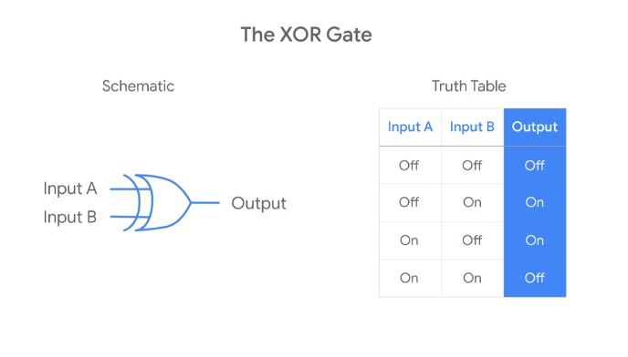

Computer technology has come a long way since the first computer
was invented. Along the way, many people from diverse
backgrounds contributed inventions and innovations that helped
us get to where we are today with modern computers. Without
these individuals, information technology would not be where it
is today.
Early Computer Pioneers
Ada Lovelace
Ada Lovelace was born in 1815 to Anna Milbanke and the poet Lord
Byron. Her mother Anna Milbanke educated her to excel in
mathematics. When Lovelace was still young, she was shown the
Difference Engine (a mechanical calculator developed by Charles
Babbage) and published a set of notes which contained the first
computer algorithm for the Analytical Engine in 1843. Lovelace
predicted at the time that computers would eventually be used
outside of mathematics for things like composing music and made
predictions about how technology would influence society.
Alan Turing
Alan Turing was born in 1912. While completing his degrees, he
developed the concept of the Turing machine. Turing proved that
there were some yes/no mathematical questions that could never
be solved computationally which defined computation and its
limitations. These findings would go on to become one of the
seeds of computer science and his conceptual Turing machine (so
named by his Doctoral advisor) is considered a predecessor of
modern computer programs. During the Second World War, Turing
developed the Turing-Welchman Bombe which was used to decipher
Nazi codes and intercept Nazi messages. After the war, Turing's
Imitation Game (now known as the Turing test) was created as a
means to evaluate the abilities of artificial intelligence.
Margaret Hamilton
Margaret Hamilton was born in 1936. While working in the
meteorology department at the Massachusetts Institute of
Technology, she developed software for predicting weather. Later
Hamilton would go on to work on the software that was used in
the NASA Apollo command and lunar modules. With her experience
writing software, she wanted to ensure that this skill would get
its due respect and coined the term “software engineering.”
Culminating her experience working on the Apollo missions and
moon landings, Hamilton formalized what she learned into a
theory that would later become the Universal System Language.
Admiral Grace Hopper
Grace Hopper was born in 1906. During the Second World War, she
joined the US Navy Reserve after taking a leave from her role as
a mathematics professor at Vassar College. In the Navy, she was
assigned the Bureau of Ships Computation Project at Harvard
University where she worked on the programming team for the Mark
I computer. After the war and her time at Harvard, she began
working on more powerful computers and recommended that a
programming language be developed that used English words rather
than symbols. This concept would eventually become FLOW-MATIC
the first programming language to use English words which also
necessitated the invention of the first compiler (a program that
translates source code into machine code). Notably, she is also
credited with first using the term “computer bug” after a real
bug (a moth) flew into a computer she was working on. Later in
her career, she was one of the designers of COBOL, a programming
language that is still in use today.
NASA and the Human Computers
The following women all worked on various NASA projects. Some
even were hired as human computers. They were tasked with
completing complex calculations by hand for all sorts of
situations from wartime thrust-to-weight ratios to Apollo orbit
trajectories. They all went on to have impressive careers in
mathematics and computer science:
Annie Easley developed the energy analytics code used to
analyze power technology including the technology that was
used in battery technology for Centaur rockets and early
hybrid vehicles
Katherine Johnson was a physicist, mathematician, and space
scientist who provided the calculation for important missions
like the first orbit of the Earth and the Apollo 11 moon
landing.
Dorothy Vaughan was a mathematician who would eventually
become the first African American supervisor of NACA (National
Advisory Committee for Aeronautics which would later become
NASA) and a FORTRAN expert programmer working on the Scout
Launch Vehicle Program (a family of rockets that placed small
satellites in orbit).
Mary Jackson was NASA’s first Black female engineer. She
worked on wind tunnel and flight experiments and would go on
to earn NASA’s most senior engineering title.
Melba Roy Mouton was a Head Mathematician at NASA working on
Project Echo, the first experiment in passive satellite
communication. At NASA, she wrote programs that calculated
locations and trajectories of aircraft.
Evelyn Boyd Granville worked on multiple projects in the
Apollo and Mercury programs for NASA. She worked on computer
techniques related to concepts like celestial mechanics and
trajectory computation.
Innovators in Modern Technology
Hedy Lamarr
Hedy Lamarr was born in 1914. A movie actress during the
golden age of Hollywood, she was also a self-taught
inventor. During the Second World War, she read about
radio-controlled torpedoes which could potentially be jammed
by enemy forces. She and a composer friend proposed and
patented an idea for a frequency-hopping radio signal that
used existing player piano technology. The principles of
this work would eventually be used in familiar technologies
like WiFI, Bluetooth, and GPS.
Guillermo Gonzalez Camarena
Guillermo Gonzalez Camarena was born in 1917. An electrical
engineer, in 1940 he patented an adapter that let monochrome
cameras use colors. This technology was one of the earliest
forms of color television. Camarena’s system would
eventually be used by NASA for the Voyager mission and made
color images of Jupiter possible.
Gerald (Jerry) Lawson
Jerry Lawson was born in 1940. Working as a semiconductor
engineer for the Fairchild company, he worked on a team that
developed the Fairchild Channel F, a color video game
console that was designed to use interchangeable game
cartridges. Previously, most game systems had built-in
programming. He would later be dubbed the “father of the
video game cartridge” for this work.
Mark E. Dean
Mark Dean was born in 1957. An inventor and computer
scientist, he is the chief engineer of the IBM team that
released the IBM personal computer. He holds three of the
nine patents for the PC. He and his team also created the
first gigahertz computer chip and he also helped develop the
color PC monitor. Along with Dennis Moeller, he developed
the Industry Standard Architecture (ISA) bus which was a
precursor to modern bus structures like PCI and PCI express.
Clarence “Skip” Ellis
Clarence Ellis was born in 1943. He was a computer scientist
and professor who pioneered in Computer Supported
Cooperative Work and Groupware. In fact, while working at
Xerox PARC, he and his team developed a groupware system
called OfficeTalk. For the first time, this system allowed
for collaboration from a distance using ethernet. He also
focused on icon-based graphical user interfaces (GUIs) that
have become prevalent in modern computing.
Gladys West
Gladys West was born in 1930. A mathematician, she was hired
to work for the US Navy to more accurately model the shape
of the Earth. She used algorithms to account for all sorts
of variations in the shape of the Earth and her model would
eventually be used as the basis for the Global Positioning
System (GPS).
These individuals are a few notable examples, but this is by no
means a complete list!
DIGITAL LOGIC
COMPUTER LANGUAGE
A computer simply compares 1s and 0s, but millions or billions
of times per second. The communication that a computer
uses is referred to as binary system, also known as base-2
numeral system. This means that it only talks in 1s and 0s. You
may be thinking, okay, my computer only talks in 1s and 0s. How
do I communicate with it? Think of it like this.
We use the letters of the alphabet to form words and we give
those words meaning. We use them to create sentences,
paragraphs, and whole stories. The same thing applies to binary,
except instead of A, B, C, and so on, we only have 0 and 1 to
create words that we give meaning to. In computing terms, we
group binary into 8 numbers, or bits.
Technically, a bit is a binary digit. Historically, we used 8
bits because in the early days of computing, hardware utilized
the base-2 numeral system to move bits around. 2 to the 8th
numbers offered us a large enough range of values to do the
computing we needed. Back then, any number of bits was used, but
eventually the grouping of 8 bits became the industry standard
that we use today.
Group of 8 bits is referred to as a byte.
So a byte of zeroes and ones could look like 10011011. Each byte
can store one character, and we can have 256 possible values,
thanks to the base-2 system, 2 to the 8th. In computer talk,
this byte could mean something like the letter C.
By using binary, we can have unlimited communication with our
computer. Everything you see on your computer right now, whether
it's a video, an image, text or anything else, is nothing more
than a 1 or a 0. It is important you understand how binary
works. It is the basis for everything else we'll do in this
course, so make sure you understand the concept before moving
on.
CHARACTER ENCODING
Byte can store only zeros and ones. That means we can have 256 possible values.
You'll learn how we can represent the words,
numbers, emojis and more we see on our screens, from only these
256 possible values. It's all thanks to character encoding.
Character encoding is used to assign our binary values to
characters so that we as humans can read them.
We definitely
wouldn't want to see all the text in our emails and Web pages
rendered in complex sequences of zeros and ones. This is where
character encodings come in handy. You can think of character
encoding as a dictionary. It's a way for your computers to look
up which human characters should be represented by a given
binary value.
The oldest character encoding standard used this ASCII.
It represents the English alphabet, digits, and punctuation marks.
The first character in ASCII to binary table, a lowercase a,
maps to 0 1 1 0 0 0 0 1 in binary. This is done for all the
characters you can find in the English alphabet as well as
numbers and some special symbols. The great thing with ASCII was
that we only needed to use 127 values out of our possible 256.
It lasted for a very long time, but eventually it wasn't enough.
Other character encoding standards recreated to represent
different languages, different amounts of characters and more.
Eventually they would require more than 256 values we were
allowed to have.
Then came UTF 8. The most prevalent encoding
standard used today.
Along with having the same ASCII table, it
also lets us use a variable number of bytes. What do I mean by
that? Think of any emoji. It's not possible to make emojis with
a single byte, so as we can only store one character in a byte,
instead UTF 8 allows us to store a character in more than one
byte, which means endless emoji fun. UTF 8 is built off the
Unicode Standard. We won't go into much of detail, but the
Unicode Standard helps us represent character encoding in a
consistent manner.
Now that we've been able to represent letters, numbers,
punctuation marks and even emojis, how do we represent color?
Well, there are all kinds of color models. For now, let's stick
to a basic one that's used in a lot of computers. RGB or red,
green, and blue model. Just like the actual colors, if you mix a
combination of any of these, you'll be able to get the full
range of colors. In computerland, we use 3 characters for the
RGB model. Each character represents a shade of the color and
that then changes the color of the pixel you see on your screen.
With just eight combinations of zeros and ones, were able to
represent everything that you see on your computer, from a
simple letter a, to the very video that you're watching right
now on the Coursera website.
BINARY DATA
You might be wondering how our computers get these ones and
zeros. It's a great question. Imagine we have a light bulb and a
switch that turns the state of the light on or off. If we turn
the light on, we can denote that state is one. If the light bulb
is off, we can represent the state is zero. Now imagine eight
light bulbs and switches, that represents eight bits with a
state of zero or one. Let's backtrack to the punched cards that
were used in Jacquard's loom.
Remember that the loom used cards with holes in them. When the
loom would reach a hole it would hooked to thread underneath,
meaning that the loom was on. If there wasn't a hole, it would
not hook the thread, so it was off. This is a foundational
binary concept. By utilizing the two states of on or off,
Jacquard was able to weave intricate patterns of the fabric with
his looms.
Then the industry started refining the punch cards a little
more. If there was a hole, the computer would read one. If there
wasn't a hole, it would read zero. Then, by just translating the
combination of zeros and ones, our computer could calculate any
possible amount of numbers.
Binary in today's computer isn't done by reading holes. It uses
electricity via transistors allowing electrical signals to pass
through. If there's an electric voltage, we would denote it as
one. If there isn't, we would denote it by zero. For just having
transistors isn't enough for our computer to be able to do
complex tasks.
Imagine if you had two light switches on opposite ends of a
room, each controlling a light in the room. What if when you
went to turn on the light with one switch, the other switch
wouldn't turn off? That would be a very poorly designed room.
Both switches should either turn the light on or off depending
on the state of the light. Fortunately, we have something known
depending on logical conditions. There are lots of different
types of logic gates, but we won't discuss them in detail here.
If you're curious about the role that transistors and logic
gates play in modern circuitry, you can read more about it in
the supplementary reading. Now we know how our computer gets its
ones and zeros to calculate into meaningful instructions. Later
in this course, we'll be able to talk about how we're able to
turn human-readable instructions into zeros and ones that our
computer understands through compilers. That's one of the very
basic building blocks of programming that's led to the creation
of our favorite social media sites, video games, and just about
everything else.
Supplemental Reading on Logic Gates
Logic Gates
Knowing how logic gates work is important to understanding how a
computer works. Computers work by performing binary
calculations. Logic gates are electrical components that tell a
computer how to perform binary calculations. They specify rules
for how to produce an electrical output based on one or more
electrical inputs. Computers use these electrical signals to
represent two binary states: either an “on” state or an “off”
state. A logic gate takes in one or more of these binary states
and determines whether to pass along an “on” or “off” signal.
Several logic gates have been developed to represent different
rules for producing a binary output. This reading covers six of
the most common logic gates.
Six common logic gates
NOT gate
The NOT gate is the simplest because it has only one input
signal. The NOT gate takes that input signal and outputs a
signal with the opposite binary state. If the input signal
is “on,” a NOT gate outputs an “off” signal. If the input
signal is “off,” a NOT gate outputs an “on” signal. All the
logic gates can be defined using a schematic diagram and
truth table. Here’s how this logic rule is often
represented:
On the left, you have a schematic diagram of a NOT gate.
Schematic drawings usually represent a physical NOT gate as
a triangle with a small circle on the output side of the
gate. To the right of the schematic diagram, you also have a
“truth table” that tells you the output value for each of
the two possible input values.
AND gate
The AND gate involves two input signals rather than just
one. Having two input signals means there will be four
possible combinations of input values. The AND rule outputs
an “on” signal only when both the inputs are “on.”
Otherwise, the output signal will be “off.”
OR gate
The OR gate involves two input signals. The OR rule outputs
an “off” signal only when both the inputs are “off.”
Otherwise, the output signal will be “on.”
XOR Gate
The XOR gate also involves two input signals. The XOR rule
outputs an “on” signal when only one (but not both) of the
inputs are “on.” Otherwise, the output signal will be “off.”

The truth tables for XOR and OR gates are very similar. The
only difference is that the XOR gate outputs an “off” when
both inputs are “on” while the OR outputs an “on.” Sometimes
you may hear the XOR gate referred to as an “exclusive OR”
gate.
NAND gate
The NAND gate involves two input signals. The NAND rule
outputs an “off” signal only when both the inputs are “on.”
Otherwise, the output signal will be “on.”
If you compare the truth tables for the NAND and AND gates,
you may notice that the NAND outputs are the opposite of the
AND outputs. This is because the NAND rule is just a
combination of the AND and NOT rules: it takes the AND
output and runs it through the NOT rule! For this reason,
you might hear the NAND referred to as a “not-AND” gate.
XNOR gate
Finally, consider the XNOR gate. It also involves two input
signals. The XNOR rule outputs an “on” signal only when both
the inputs are the same (both “On” or both “Off”).
Otherwise, the output signal will be “off.”
The XNOR rule is another combination of two earlier rules:
it takes the XOR output and runs it through the NOT rule.
For this reason, you might hear the XNOR referred to as a
“not-XOR” gate.
Combining gates (building circuits)
Logic gates are physical electronic components—a person can buy
themand plug them into a circuit board. Logic gates can be
linked together to create complex electrical systems (circuits)
that perform complicated binary calculations. You link gates
together by letting the output from one gate serve as an input
for another gateor by using the same inputs for multiple gates.
Computers are this kind of complex electrical system.
Here’s a schematic drawing for a small circuit built with
gates described above:
Here is the truth table for this circuit:
This circuit uses three logic gates: an XOR gate, a NOT gate,
and an AND gate. It takes two inputs (A and B) and produces two
outputs (1 and 2). A and B are the inputs for the XOR gate. The
output of that gate became the input of the NOT gate. Then, the
output of the NOT gate became an input for the AND gate (with
input A as the other). Output 1 is the output from the AND gate.
Output 2 is the output from the XOR gate.
Key takeaways
Logic gates are the physical components that allow computers to
make binary calculations.
Logic gates represent different rules for taking one or more
binary inputs and outputting a specific binary value (“on” or
“off”).
Logic gates can be linked so that the output of one gate
serves as the input for other gates.
Circuits are complex electrical systems built by linking logic
gates together. Computers are this kind of complex electrical
system.
Computer Architecture Layer
BINARY COUNTING
Binary is the fundamental communication block of computers, but
it's used to represent more than just text and images. It's used
in many aspects of computing like computer networking, which
you'll learn about in a later course. It's important that you
understand how computers count in binary. We've shown you simple
lookup tables that you can use like the ASCII to binary table,
but as an IT support specialist, whether you're working on
networking or security, you'll need to know how binary works.
So let's get started. You'll probably need a trusty pen and
paper, a calculator, and some good old-fashioned brain power to
help you in this video. The binary system is how our computers
count using ones and zeros, but humans don't count like that.
When you were a child, you may have counted using ten fingers on
your hand. That innate counting system is called the decimal
form or base-10 system. In the decimal system, there are 10
possible numbers you can use ranging from zero to nine. When we
count binary, which only uses zero and one, we convert it to a
system that we can understand, decimal. 330, 250, 2, 40, 4
million, they're all decimal numbers. We use the decimal system
to help us figure out what bits our computer can use. We can
represent any number in existence just by using bits. And we can represent this number just using ones and
zeros.
So how does that work? Let's consider these numbers: 128, 64,
32, 16, 8, 4, 2, and 1. What patterns do you see? Hopefully,
you'll see that each number is a double of the previous number
going right to left. What happens if you add them all up? You
get 255. That's kind of weird. I thought we could have 256
values for a byte. The zero is counted as a value,
so the maximum decimal number you can have is 255. What do you
think the number is represented here? See where the ones and the
zeros are represented. Remember, if our computer sees a one,
then the value was on. If it sees a zero, then the value is off.
If you add these numbers up, you'll get a decimal value. If you
guessed 10, then you're right.
If you didn't get it, that's okay too. Take another look. The 2
and 8 are on, and if we add them up, we get 10. Let's look at
our ASCII to binary table again. The letter h in binary is
01101000. Now, let's look at an ASCII to decimal table. The
letter h in decimal is 104. Now, let's try our conversion chart
again. 64 plus 32 plus 8 equals 104. Look at that. The math
checks out. Now, we're cooking. Wow! We've gone over all the
essentials of the basic building blocks of computing and machine
language. Next, you're going to learn how we build on top of
this layer of computing to perform the task
COMPUTER ARCHITECTURE
In the last video I mentioned that people don't need to
understand how a computer works for them to use it, because
abstraction makes things simpler for us. That's technically
true, but since you're stepping into the world of IT, you do
need to understand all the layers of a computer and how they
work. It's essential that you understand how the different
pieces interact so you can resolve any issue that may arise.
A computer can be cut into four main layers:
Hardware
Operating system
Software
Users
The hardware layer is made up of
the physical components of a computer. These are objects you can
physically hold in your hand. Laptops, phones, monitors,
keyboards
The operating system allows hardware to communicate with the
system. Hardware is created by many different manufacturers. The
operating system allows them to be used with our system,
regardless of where it came from.
The software layer is how we as humans interact with our
computers. When you use a computer, you're given a vast amount
of software that you interact with, whether it's a mobile app, a
web browser, a word processor, or the operating system itself.
Later in this course, we'll learn how software is installed on
our systems, and how we interact with different types of
software. The last layer may not seem like it's part of the
system, but it's an essential layer of the computer
architecture, the user.
The user interacts with the computer and she can do more than
that. She can operate, maintain, and even program the computer.
The user layer is one of the most important layers we'll learn
about. When you step into the field of IT, you may have your
hands full with the technical aspects, but the most important
part of IT is the human element.
By the end of the course, you'll also learn how to apply your
knowledge of how a computer works to fix real world issues that
can sometimes seem random and obscure. We'll do this by learning
how to utilize problem solving tactics to identify issues and
solutions.
Які є чотири рівні комп’ютерної архітектури? Апаратне забезпечення,
операційна система, програмне забезпечення, користувач
Module 1 Glossary
Abstraction: To take a relatively complex system and simplify it
for our use Algorithm: A series of steps that solves specific
problems ASCII: The oldest character encoding standard used is
ASCII. It represents the English alphabet, digits, and punctuation
marks Binary system: The communication that a computer uses is
referred to as binary system, also known as base-2 numeral system
Byte: A group of 8 bits Character encoding: Is used to assign our
binary values to characters so that we as humans can read them
Computer: A device that stores and processes data by performing
calculations Cryptography: The overarching discipline that covers
the practice of coding and hiding messages from third parties
Decimal form- base 10 system: In the decimal system, there are 10
possible numbers you can use ranging from zero to nine Digital
divide: The growing skills gap between people with and without
digital literacy skills Information technology: The use of digital
technology, like computers and the internet, to store and process
data into useful information Linux OS: Linux is one of the largest
open source operating systems used heavily in business
infrastructure and in the consumer space Logic gates: Allow
transistors to do more complex tasks, like decide where to send
electrical signals depending on logical conditions Open source:
This means the developers will let other developers share, modify,
and distribute their software for free PDA (Personal Digital
Assistant): Allows computing to go mobile Punch cards: A sequence
of cards with holes in them to automatically perform calculations
instead of manually entering them by hand RGB model: RGB or red,
green, and blue model is the basic model of representing colors
UTF-8: The most prevalent encoding standard used today
Module 2
The modern computer
Introduction to Computer Hardware
Let's face it, computers are everywhere. You come into contact
with them at home, work, the airport, the grocery store, you're
using some type of computer to take this course.
But for now, let's check out a typical desktop setup. Desktops
are just computers that can fit on or under our desks.
Physical components, hardware: a monitor, a keyboard, a mouse, and a desktop. Sometimes
you might even add a webcam, speakers, or a printer set up
You can see common connectors here, the power outlet here, and
the common ports here.
Ports are connection points that we can
connect devices to that extend the functionality of our
computer.
We have a port here
to connect to a monitor, and a few ports here to plug your
keyboard and mouse. There's another important one here for our
network connection. With just these ports, we're able to have
the basic functionality to browse the web and much more. Things
look pretty similar in a laptop.
A built-in monitor, And a
keyboard. There are also physical components inside the laptop
case that are hidden for portability. Once you figure out how
one computer works, you can figure out how any other computer
works.
CPU or central processing unit, which is covered by this
heat sink. You could think of the CPU as the brain of our
computer. The CPU does all the calculations and data processing.
It communicates pretty heavily with this component right here,
RAM or Random Access Memory.
RAM is our computer's short-term
memory. We use this component when we want to store data
temporarily.
Like let's say, you're typing something into a chat
or a piece of text in a word processor. This information is
stored in the RAM. When we want to store anything in
long-term memory, we use this component here, the hard drive.
Hard drive holds all of our data, which can include music,
pictures, applications.
Motherboard, it holds everything in place and lets our components communicate
with each other. It's the foundation of our computer. You can
think of the motherboard as the body or circulatory system of
the computer that connects all the pieces together.
Power supply, which converts
electricity from our wall outlet onto a format that our computer
can use.
All these components make up most computers, even a mobile phone. While it might look very
different from your laptop, a mobile phone just uses a smaller
version of the hardware that we saw in the desktop and laptop
today. Understanding how computer hardware works
is a really helpful skill set in IT support, since an IT
department maintains the hardware that a company uses. A solid
understanding of these computer internals will come in handy
when troubleshooting hardware related problems, and taking
things apart to see how they work is just super fun.
Programs, the CPU, and Memory
Our computer can only communicate in binary, using
ones and zeroes.
Our computers speak in machine language, but we
of course speak in human languages, like English, Spanish,
Mandarin, Hindi. If we want to communicate
with our machines, we have to have some translation dictionary.
Well our computers have a
built-in translation book. In this lesson, we'll dive deeper
into how our computer translates the information we give it into
instructions that it understands. Right now, you're probably
using a web browser, music player, text editor or something else
in your computer. We interact with these applications on a daily
basis. They are referred to as Programs.
Programs are basic
instructions that tell the computer what to do. We typically
store programs on durable media like hard drives.
You can think
of programs like cooking recipes. We get these recipes all
stored together in a cook book just like apps stored in a hard
drive. Now we want to make a ton of food. So we hire a chef to
follow our recipes and whip up something good. The faster our
chef works, the more food she'll prepare. The chef is our CPU,
she processes the recipes we send her and makes the food. Our
chef works super fast, so fast that she can cook faster than she
can read. So, we take copy of the recipes and put them into RAM.
Remember that RAM is our computer's short-term memory. It stores
information in a location our CPU can access faster than it
could with our hard drive. Now we can give our chef one or two
recipes at a time, instead of reciting the entire cookbook to
her. Okay, now let's say I want to make a peanut butter and
jelly sandwich. I see a pretty good recipe, and send it to our
chef to make.
Remember that our chef needs these instructions quickly, so I
don't send her the entire recipe, I send her one line at a time.
1, Get two slices of bread. 2, Put peanut butter on one slice.
3, Put jelly on another slice. 4, Combine the two slices of
bread. Now, let me throw one more thing at you. Our chef can
only communicate with us in ones and zeroes. So instead of
sending something readable, like the recipe for a peanut butter
and jelly sandwich, we have to send her something like this. In
reality, this process is a little more complicated.
Our CPU is
constantly taking instructions and executing them. These
instructions are written in binary.
How do instructions travel around
the computer? In our computer, we have something called the
External Data Bus or EDB.
It's nothing like a bus at all. External Data Bus (EDB) is a row of wires that
interconnect the parts of our computer, kind of the veins in our
body. When you send a voltage to one of the wires, we say the
state of the wire is on, or represented by a 1. If there's no
voltage, then we say that the state is off, represented by a 0.
This is how we send around our ones and zeroes.
The last lesson we talked about how transistors help us to send
voltages. Now we know how our bits physically travel around
computer. The EDB comes in different sizes, 8 bit, 16 bit, 32,
even 64. Can you imagine if you had 64 wires going? You can move
around a lot more data. Right now, were just going to stick with
using an EDB with 8 bits in our examples. Sending 1 byte at a
time.
Our CPU is receiving a byte and it needs to get to
work. Inside the CPU there are components known as Registers.
Registers let us store the data that our CPU works with.
If for
example, our CPU wanted to add two numbers, one number would be
stored in a register a. Another number would be stored in
register b. The result of those two numbers would be stored in
register c. Imagine the register is one of our chef's work
tables. Since she has a place to work, she can start to cook. To
do so she uses a translation book to translate her binary into
tasks that she can perform.
Let's jump back for a second. Remember that our programs are
copied into RAM for the CPU to read.
RAM is memory that is
randomly accessed, allowing our CPU to read from any part of RAM
as quickly as any other part.
We don't actually send data from
RAM over the EDB. There would be way to much stuff. RAM can hold
millions, even billions, of rows of data. Despite our sandwich
example, most of our recipes aren't simple at all. There can be
thousands of lines long. We want to process them and we don't
actually go in any particular order. Since we can only send one
line of data through the EDB at the time, we need the help of
another component, the Memory Controller Chip or MCC.
The MCC is
a bridge between the CPU and the RAM. You can think of it, a
nerve in your brain connecting to your memories. The CPU talks
to the MCC, and says, hey, I need the instructions for step
number three of this recipe. The MCC finds the instructions for
step number three in RAM, grabs the data, and sends it through
the EDB.
There's another bus. There's nothing like a bus
involved in the process called the Address bus.
Address bus connects the
CPU to the MCC, and sends over the location of the data, but not
the data itself. Then the MCC takes the address and looks for
the data. And then data is then sent over the EDB.
Believe it or not, RAM isn't the fastest way we can get more
data to our CPU for processing. The CPU also uses something
known as Cache.
Cache is smaller than RAM, but it let's us store
data that we use often, and let's us quickly reference it.
Think of RAM like a refrigerator full of food. It's easy to get into,
but it takes time to get something out. On the flip side of
that, Cache is like the stuff we have in our pockets. It's used
to store recently or frequently accessed data.
There are three
different cache levels in a CPU, L1, L2, and L3. L1 is the
smallest and fastest cache.
If you're interested in learning
more about this, you can check out the supplemental reading I've
included right after this video. So now we understand how our
RAM interacts with our CPU. But how does our CPU know when the
set of instruction ends, and a new one begins.
Our CPU has an
internal clock that keeps its operations in sync. It connects to
a special wire called Clock wire. When you send or receive data,
it sends a voltage to that clock wire to let the CPU know it can
start doing calculations. Think of our clock wires as the
ticking of a clock. For every tick, the CPU does one cycle of
operations. When you send a voltage to the clock wire, it's
referred to as a clock cycle. If you have lots of data you need
to process in a command. You need to run lots of clock cycles.
Have you ever seen a CPU in the store and has something labeled
3.4ghz, this number refers to the Clock speed of the CPU.
Clock speed of CPU is a maximum number of clock cycles that it can handle in a set
in a certain time period. 3.40 gigahertz is 3.4 billion cycles
per second.
That's super fast. But just because it can run at
this speed, doesn't mean it does. It just means that it can't
exceed this number. Still, that number doesn't stop some people
from trying. There's a way you can exceed the number of clock
cycles on your CPU on almost any device.
Overclocking and it increases the rate of your CPU clock cycles
in order to perform more tasks. This is commonly used to
increase the performance in low-end CPUs.
Let's say you're a
gamer and you want to have better graphics and less lag while
playing. You might want to overclock your CPU when you play the
game, but there are cons to doing this, like potentially
overheating your CPU. You can read more about overclocking in
the next supplementary reading.
Supplemental Reading for CPUs
CPU cache and overclocking
In this reading, you will learn about the various levels of
cache for central processing units (CPUs) and how a CPU
processes and executes instructions. Additionally, you will
learn about overclocking CPUs to maximize processing speeds. IT
Support professionals may use this information when purchasing,
allocating, and/or configuring high-performance servers.
Cache
Cache is a small amount of
recently used data that is stored either on hardware or in
software.
The first time data is accessed, both the initial
request for the data and the reply containing the data pass
through multiple points on their journey. Depending on several
variables, these points might include I/O devices, motherboard
busses, RAM, cables, hard drives, applications, networks, the
internet, cloud platforms, and more. If a computer needed to use
these full paths everytime it tried to access data, the entire
transaction could take a relatively long time. Cache speeds up
this process by holding a local copy of the most recently
accessed data in temporary storage.
CPU cache
CPUs use a system of cache storage to help them quickly access
data. A CPU cache is normally stored inside each core of the
CPU.
Older computers might store CPU cache in a transistor chip
that is attached to the motherboard, along with a high-speed bus
connecting the chip to the CPU.
CPU levels of cache
There are three levels of CPU cache memory:
Level 3 cache: L3 cache is the largest and slowest of CPU
cache. However, it is often twice as fast as RAM. L3 is the
first CPU cache location to store data after it is transferred
from RAM. L3 cache is often shared by all of the cores in a
single CPU.
Level 2 cache: L2 cache holds less data than L3 cache, but it has faster access speeds. L2 holds a copy of the most recently
accessed data that is not currently in use by the CPU. Each
CPU core normally has its own L2 cache.
Level 1 cache: L1 cache is the fastest and smallest of the
three CPU cache levels. L1 holds the data currently in use by
the CPU. Each CPU core usually has its own L1 cache.
Overclocking a cpu
Overclocking a CPU sets it to run at a higher CPU clock
frequency rate than the manufacturer’s original specifications.
For example, if a processor is labeled as having a 3.2 GHz base
frequency rate, it may be possible to overclock the CPU to run
at 3.5 GHz. Achieving a higher CPU clock frequency rate means
the CPU can process a higher volume of instructions per
nanosecond, resulting in faster performance. A computer user
might want to overclock their CPU to improve sluggish speeds
when performing processor-intensive tasks, like video editing or
gaming.
Overclocking a CPU’s frequency involves three variables:
The base CPU clock frequency, often measured in GHz.
The core frequency, which is calculated by multiplying the
base frequency by the CPU core multipliers.
The core voltage, which needs to be increased in small
increments to meet the increasing power demand of the CPU
during the overclocking process.
Warnings on overclocking
Overclocking the CPU can damage the computer if not configured
properly. Operating a CPU at a higher speed can overheat the CPU
and surrounding hardware, which can cause the computer system to
fail. Additionally, overclocking the CPU can shorten the overall
lifespan of the computer and void the computer’s warranty. It is
better to avoid overclocking the CPU and instead purchase the
appropriate CPU speed necessary to meet computing demands.
How to overclock a CPU safely
As an IT Support professional, you may be asked to overclock a
CPU. There are steps you should follow to do this as safely as
possible. Always make sure that the requestor understands the
risks of overclocking before agreeing to perform this procedure.
Check if overclocking is supported: First,
make sure the CPU is a model that is unlocked for
overclocking. Not all CPUs can support overclocking, including
most laptop CPUs. Check the CPU manufacturer’s documentation
to determine if overclocking is possible for the CPU model.
Both Intel and AMD provide overclocking guides and tools for
supported CPU models (see below for links to these guides).
Additionally, check the documentation for the computer’s
motherboard model to ensure that it can support an overclocked
CPU.
Clean the inside of the computer: Turn off
and unplug the computer. While wearing an anti-static
wristband, open the computer and use compressed air to remove
any dust build-up that has accumulated. It is especially
important to remove any dust from around the CPU, fans, and
intake vents.
Ensure an appropriate CPU cooler is installed
(critical):
If the computer has a stock CPU cooler, it is most likely
insufficient for cooling an overclocked CPU. Replace the stock
CPU cooler with an advanced cooling system, like a liquid
cooling system.
Follow the manufacturer’s instructions for overclocking the
CPU:
Using the detailed instructions from the manufacturer (see
below for links to Intel and AMD’s guides):
Use benchmarking software to establish a baseline for the
normal performance of the computer.
Set each CPU core multiplier to the value of the lowest
multiplier using either the manufacturer’s overclocking
software (recommended) or the BIOS. Then reboot the
computer.
Increase each CPU core multiplier by 1 to increase the CPU
frequency.
Test each increase for stability using the testing utility
provided by the manufacturer.
Fix any problems flagged by the testing tools,
especially temperature alerts. If the system becomes
too unstable, roll back to the last frequency that
produced a stable performance and stop overclocking
the CPU.
If the voltage appears to become insufficient to
support the new frequency, increase the voltage by
0.05V. Do not increase the voltage above 1.4V without
specialized cooling hardware.
If the computer freezes or crashes, it has either
become completely unstable or the CPU is not getting
enough voltage to support the overclocked frequency.
Use the BIOS to return to the last stable frequency or
increase the voltage in 0.01V increments until stable.
If stable, reboot the computer before attempting the next
increase.
Components
CPU
If someone asked you, calculate the square root of 5,439,493,
would you do the math by hand? Unless you really love tedious
Math problems, you'd probably use a calculator. What about
binary? Well, you probably wouldn't calculate binary by hand
either. There's actually a very powerful calculator right inside
of your computer that processes binary for us. We've already
discussed this calculator in detail. Do you know what it is?
It's our CPU, the brain of our computer. In this video, we'll
cover the more practical aspects of the CPU. Remember that
translation book that I talked about in an earlier lesson? The
CPU uses this to translate and perform functions on our data.
This translation book is called an instruction set, which is
literally just a list of instructions that our CPU is able to
run. Functions like adding, subtracting, copying data are all
instructions that our CPU can carry out.
Every single program on your computer, while extremely complex,
is broken down into very small and simple instructions found in
our instruction set. Instruction sets are hard-coded into our
CPU. So different CPU manufacturers may use different
instructions sets. But they generally perform the same
functions.
It's like how car manufacturers build their engines
differently but they all get the same job done. You probably
work with computer hardware as an I.T. support specialist,
replacing failed hard disks, upgrading RAM modules, and
installing video cards. So you need to be aware of what's out
there.
You've probably heard of a few popular CPU manufacturers or
chipsets like Intel, AMD and Qualcomm. These CPU manufacturers
use different part names to differentiate their processors. Like
Intel Core i7, AMD Athlon, Snapdragon 810, Apple A8, and more.
Now, when you hear these terms, you'll know what they mean. Each
of these CPU manufacturers have their strengths and weaknesses.
If you're interested in learning more about why some CPUs are
more popular than others, you can check out the next
supplemental reading. When you select your CPU, you need to make
sure it's compatible with your motherboard. The circuit board
that connects all your components together.
You can't just buy a bunch of parts and expect them to work
together. There are different ways CPUs fit on motherboards
using different sockets. Your CPU might have lots of tiny pins
that either stick out or have contact points that look like
dots. Depending on your motherboard, you need to make sure these
CPUs fit correctly in the socket.
There are currently two major
types of CPU sockets, Land Grid Array also known as LGA, and Pin
Grid Array, also known as PGA. In an LGA socket, like this one,
there are pins that stick out of the motherboard. The socket
size may vary.
So always make sure you CPU and socket are compatible before
hand. When you purchase the CPU or motherboard, they will tell
you right on the box what type of socket it has. Make sure your
CPU and motherboard socket also both match. If it's not listed
on the box, you can go to the manufacturer's website where it
usually list what types of CPUs are compatible with the
motherboard. The other type of socket is the PGA socket, where
the pins are located on the processor itself. When we install
our CPU, we need to do a few things to it to keep it cool. Since
it does a lot of work, it's prone to overheating.
We have to make sure to include a heat sink, too, which takes
the heat from our CPU and dissipates it through a fan or another
medium. There's one last thing I want to call out about CPUs. If
you purchase a CPU, you'll see that it has either a 32 bit or 64
bit architecture. What does that mean? Well, we know we can
process 8 bits in binary. Now, imagine how we can process with
32 or even 64 bits.
CPUs that have 32 bit or 64 bit architecture
are just specifying how much data it can efficiently handle.
You
can read more about the differences between 32 bit and 64 bit
architecture in the next reading. For now, the main takeaway is
that the CPU is one of the most important parts of a computer.
So we have to make sure it's compatible with all other
components and can perform well for our computing needs.
Upgrading from the 32-bit version to the 64-bit version of
Windows requires that you reformat your hard disk, install the
64-bit version of Windows, and then reinstall everything else
that you had on your device.
To install a 64-bit version of
Windows, you need a CPU that's capable of running a 64-bit
version of Windows. The benefits of using a 64-bit operating
system are most apparent when you have a large amount of random
access memory (RAM) installed on your computer, typically 4 GB
of RAM or more.
In such cases, because a 64-bit operating system
can handle large amounts of memory more efficiently than a
32-bit operating system, a 64-bit system can be more responsive
when running several programs at the same time and switching
between them frequently.
RAM- short term memory
Let's talk about RAM, our computers' short term memory. We use
RAM to store data that we want to access quickly. This data
changes all the time so it isn't permanent. Almost all RAM is
volatile, which means that once we power off our machines, the
data stored in RAM is cleared. Remember that our computer is
comprised of programs. To run a program, we need to make a copy
of it in RAM so our CPU can process it.
When you see a new phone
or laptop that's says it has 16 gigs of RAM, that means it can
run up to 16 gigs of programs, meaning you can run lots of
programs at the same time.
When you type in a document, you're using RAM. If you've ever
had the misfortune of working on an important presentation of
paper and losing power, you know the feeling you get when all of
the work you've done is lost. This happens because RAM clears it's data.
There are lots of types of RAM. And the one is commonly found in
computers, is DRAM or dynamic random access memory. Where a one
or zero is sent to DRAM, it stores each bit in a microscopic
capacitor. This is either the charge or discharge represented by
one or zero. These semiconductors are put into chips that are on
the RAM and store our data. There are also different types of
memory sticks that DRAM chips can be put on. The more modern
DIMM sticks, which usually stands for Dual Inline Memory Module,
have different sizes of pins on them. I should call out, we
don't really buy RAM based on the number of DRAM chips they
have. They are labeled by the capacity of RAM on a stake, like
an 8 gig stick of RAM.
After DRAM was created, RAM manufacturers
build something called SDRAM which stands for Synchronous DRAM.
This type of RAM is synchronized to our systems' clock speed
allowing quicker processing of data.
In today's system, we use
another type of RAM, called double data rate SDRAM, or DDR SDRAM
for short. Most people refer to this RAM as DDR, even shorter.
There were lots of iterations of DDR, from DDR1, DDR2, DDR3 and
now, DDR4. DDR is faster, takes up less power, and has a larger
capacity than earlier SDRAM versions. The latest version, DDR4,
is the fastest type of short term memory currently available for
your computer. And faster RAM means that programs can be run
faster and that more programs can run at the same time. Keep in
mind that any RAM sticks you use need a compatible motherboard
with a different number of pins aligned with the motherboard RAM
slots. Just like with the CPU, make sure that your motherboard
is compatible with any RAM sticks that you buy. Up next, we'll
take a deep dive into motherboards.
Motherboard
The motherboard, the foundation that holds our computer
together. It lets us expand our computers functionality by
adding expansion cards. It routes power from the power supply,
and it allows the different parts of the computer to communicate
with each other. In short, it's a total boss.
Every motherboard
has a few key characteristics:
First is the chipset, which
decides how components talk to each other on our machine.
The chipset on motherboards is made up of two chips. One is
called the Northbridge that interconnects stuff like RAM and
video cards. The other chip is the Southbridge, which maintains
our IO or input-output controllers, like hard drives and USB
devices, that input and output data. In some modern CPUs, the
Northbridge has been directly integrated into the CPU so there
isn't a separate Northbridge chip set.
The chipset is a key
component of our motherboard that allows us to manage data
between our CPU, RAM, and peripherals.
Peripherals are the external devices we connect to our computer,
like a mouse, keyboard, and the monitor.
In addition to the
chipsets, motherboards have another key characteristic which
allows the use of expansion slots. Expansion slots also give us
the ability to increase the functionality of our computer. If
you wanted to upgrade your graphics card, you could purchase one
and just install it on your motherboard through the expansion
slot. The standard for an expansion bus today is the PCI Express
or Peripheral Component Interconnect express. A PCIe bus looks
like a slot on the motherboard and a PCIe base expansion card
looks like a smallest circuit board.
The last component of motherboards that we'll discuss is form
factor. There are different size of motherboards that are
available today. These sizes of form factors determine the
amount of stuff we can put in it and the amount of space we'll
have. The most common form factor for motherboards is ATX, which
stands for Advanced Technology Extended. ATX actually comes in
different sizes too. In desktops, you'll commonly see full-sized
ATXs. If you don't want to use an ATX form factor, you could use
an IT or information technology extended form factor. These are
much smaller than ATX boards. For example, the Intel NUC uses a
variation of the ATX board, which comes in three board sizes;
mini ITX, nano ITX, and pico ITX.
When building your computer, you will need to keep in mind what
type of form factor you want. Do you want to build something
small that can't handle as much workload, or do you want a
powerhouse workstation that you can add lots of functionality
to? The form factor will also play a role into what expansion
slots you might want to use. Understanding motherboards and
their characteristics can be a big plus one fixing hardware
issues since things like the type of RAM module or processes
socket are dependent on the kind of motherboard they need to fit
into. Let's say you're responding to a ticket for a user who's
having video problems, you don't want to make it all the way to
their desk only to realize the graphics card you bought as a
replacement doesn't fit the motherboard their computer uses.
Physical Storage: Hard Drives
Before we get into computer storage, we need to fill in some
gaps. Gigabytes, bits: these terms refer to data sizes.
The smallest unit of a
data storage is a bit. A bit can store one binary digit, so it
can store a one or a zero.
Byte, which is comprised of eight bits. A single byte
can hold a letter, number or symbol.
The next largest unit is
referred to as a KB bite. But we typically use the term
kilobyte. A kilobyte is made up of 1,024 bytes.
Here's a quick
data conversion chart. How much does 500 gigabyte even mean?
Let's take a look at the size of an average music file, which is
about three megabytes. On a 500 gigabyte machine, that's
approximately 165,000 music files.
Have you ever had an issue with your computer and
lost all the data that was on your hard drive? Yeah, me too. It
was the worst. This actually happens a lot and you'll probably
encounter it as an IT support specialist. Make sure you backup
your data to be safe. This means you should copy or save your
data somewhere else just in case something goes wrong and your
hard drive crashes.
There are two basic hard drive types used today. Hard disk
drives or HDDs uses a spinning platter and a mechanical arm to
read and write information. The speed that the platter rotate
allows you to read and write data faster. This is commonly
referred to as RPM or revolution per minute. A hard drive with a
higher RPM is faster. So if you go out and buy a hard drive
today, you might see something like a 500 gigabyte, with 5,400
rpm. HDDs are prone to a lot more damage because there are a lot
of moving parts. This susceptibility to damage went away with a
new type of storage called solid state drive or SSD. SSDs have
no moving parts.
Are you familiar with a USB stick? SSDs operate in a similar
way. The information is stored on microchips and data travels a
lot faster than HDDs. The form factor for SSDs is also slimmer
compared to their HDD cousins. So why
doesn't everyone use SSDs? Well, both have their pros and cons.
HDDs are more affordable, but they're more prone to damage.
SSDs
are less risky when it comes to losing data, but they're also
more expensive.
So you may not buy as much memory storage in
SSDs than what you can get in HDDs.
There are even hybrid SSD and HDD drives out
there. They offer SSD performance where you need it for things
like system performance, such as putting your computer along
with hard disk drives, but less important stuff like basic file
storage.
There are a few interfaces that hard drives use to
connect our system. ATA interfaces are the most common ones. The
most popular ATA drive is a Serial ATA or SATA, which uses one
cable for data transfers. SATA drives are hot swappable. It means you don't have to turn off your
machine to plug in a SATA drive. SATA drives move data faster
and use a more efficient cable like this one than its
predecessors. SATA has been the de facto interface for HDDs
today. But people quickly found that using the SATA cable wasn't
good enough for some of the blazing fast SSDs that were coming
on the market. The interface couldn't keep up with the speeds of
the newest SSDs.
So another interface standard was created
called NVM express, or NVMe. Instead of using a cable to connect
your drive to your machine, the drive was added as an expansion
slot, which allows for greater throughput of data and increased
efficiency.
Supplemental Reading for Data Storage
Data Storage Measurements
In this reading, you will learn about the different names for
measurements of data storage capacities and file sizes. Data
storage capacity increases in step with the evolution of
computer hardware technology. Larger storage capacities allow
for dynamic growth in file sizes. These advances make it
possible for companies like Netflix and Hulu to store thousands
of feature-length films in high video quality formats. There are
standardized sets of terms used to name the ever expanding sizes
of data storage and files. For example, the common terms used to
describe file sizes and hard drive storage capacity include:
bytes, kilobytes, megabytes, gigabytes, and terabytes. However,
if you are a computer engineer, you might use a different set of
terms.
The decimal naming system for computer storage uses the metric
system of prefixes from the International System of Units: kilo,
mega, giga, tera, peta, exa, zetta, and yotta. These prefixes
may also be referred to as the decimal system of prefixes. The
metric/decimal nomenclature represent a base-10 approximation of
the actual amount of data storage bytes. The metric system
prefixes were selected to simplify the marketing of computer
products.
The binary naming system is a standard set by the International
Organization for Standardization (ISO) in partnership with the
International Electrotechnical Commission (IEC). The ISO 80000
and IEC 80000 guides to units of measurement define the
International System of Quantities (ISQ). The prefixes kibi-,
mebi-, gibi, -tebi-. pebi-, exbi-, zebi-, and yobi- were created
by the IEC organization. They are a blend of the first two
letters of the metric prefix fused with the first two letters of
the word “binary” (example: megabyte + binary + byte= mebibyte).
Binary measurements of computer data are more accurate than
decimal system measurements. While decimal nomenclature is
commonly used to market computers and computer parts to the
general public, binary nomenclature is often used in computer
engineering for numerical accuracy.
Quantities of storage measurements
As data storage grows, the need for new terminology to describe
the exponentially larger byte quantities grows too. The current
byte nomenclature, mathematical representations, and storage
capacities are as follows:
One bit: Also called a binary digit, bits store an electric
signal as 1. The absence of an electric signal is stored as 0,
which is also the default value of a bit. One bit can store
only one value, either 1 or 0. These two possible values are
the basis of the binary number system (base-2) that computers
use. All numbers in a base-2 system increase exponentially as
powers of 2.
One byte: One byte stores eight bits of ones and zeros that
translate to a symbol or basic computer instruction. Examples:
01101101 is the byte that translates to the letter “m.” The
byte 01111111 tells the computer to delete the character to
the right of the cursor.
One kilobyte (1 KB):
Kilobyte (KB) decimal format: 103 = 1,000 bytes
Kibibyte (KiB) binary format: 210 = 1,024 bytes
Decimal inaccuracy: Off by -2.4% or -24 bytes
Name origin: “Kilo-” is a French derivation from the
Ancient Greek word for “thousand” A kilobyte is one
thousand bytes.
1 KB can hold: A short text file or a small icon as a
16x16 pixel .gif file.
Name origin: “Tera-” is a shortened form of “tetra-”,
which was derived from the Ancient Greek word for the
number four. The 1012 decimal format can also be written
as 10004 (one-thousand to the 4th power). “Tera-” in
Ancient Greek means “monster.” You might think of the word
“terabyte” as a monstrously large number of bytes.
1 TB can hold: Approximately 200,000 songs in .mp3 format
or 300 hours of video.
Name origin: “Peta-” is derived from the Ancient Greek
word “penta” meaning five. The 1015 decimal format can
also be written as 10005 (one-thousand to the 5th power).
1 PB can hold: The content from 1.5 million CD-ROM discs
or 500 billion pages of text.
Name origin: “Exa-” was derived from the Ancient Greek
word for six. The 1018 decimal format can also be written
as 10006 (one-thousand to the 6th power).
1 EB can hold: Approximately 11 million movies in 4k video
resolution or 3,000 copies of the entire United States
Library of Congress.
Name origin: “Zetta” was derived from the Latin word
“septem” which means seven. The 1021 decimal format can
also be written as 10007 (one-thousand to the 7th power).
1 ZB can hold: Seagate reports one zettabyte can hold 30
billion movies in 4k video resolution.
Name origin: “Yotta” is Ancient Greek for eight. The 1024
decimal format can also be written as 10008 (one-thousand
to the 8th power).
1 YB can hold: In 2011, a cloud storage company estimated
that one yottabyte could hold the data of one million data
centers.
Power Supplies
In order to get our computer to work, let's give it some power.
Computers have a power supply that converts electricity from
your wall to something usable. There are two types of
electricity DC or direct current which flows in one direction
and AC or alternating current which changes directions
constantly. Our computers use DC voltage so we have to have a
way to convert the AC voltage from our power company to
something we can use. That's what our power supply does. It
converts the A C we get from the wall into low voltage DC power
that we can use and transmit throughout our computer.
To understand electricity, let's use
the example of water pipes. Our tanks have a faucet that's
connected to a pressurized water tank. When we turn on the
faucet, water comes out. This is sort of how electricity works,
when we plug in appliance into a wall outlet and turn it on, a
flow electricity comes out. If we added more pressure to our water tank, would more water come out of it? The higher the pressure, the more water there
will be.
When it comes to electricity, we refer to the pressure
as voltage. So, when I was on vacation to my surprise, when I
plugged in the 120 volt appliance into a 220 volt outlet, the
power came bursting through and fried my charger. If it was the
other way around and a 220 volt appliance was plugged into 120
volt outlet, I wouldn't have seen the same outcome. I'll still
be able to get electricity, but slowly. This would be similar to
if a water tank was only half pressurized it will draw water but
slowly, in some cases though, this can deteriorate the
performance of the device and cause damage in the long-term. As
a general rule, be sure to use the proper voltage for your
electronics. We refer to the amount of electricity coming out as
current or amperage and it's measured in amps.
We can think of amps as pulling electricity as opposed to
voltage, which pushes electricity. Amps will pull as much
electricity needed, but voltage will just give you everything.
Look on the back of one of your device charges. You might see
something like1 or 2.1 A, charging a device with 2.1 amps will
actually charge a device faster because it's able to put more
current from a 2.1 amp than a 1 amp charger.
Finally, the other
important part of the electricity that you'll need to know is
the wattage. Wattage is the amount of volts and amps that the
device needs.
If your power supply has too low the wattage, you won't be able
to power your computer, so make sure you have enough. This
doesn't mean that if you have a large power supply you will
overpower your computer. Power supplies just give you the amount
that your system needs. It's best to err on the side of large
power supplies, you can power most basic desktops with a 500
watt power supply. But if you're doing something more demanding
on your computer like playing a high resolution video game or
doing a lot of video production and rendering, you will likely
need a bigger power supply for your computer. On the other hand,
if all you're doing is just browsing the web, the power supply
that comes with your computer should be fine. All kinds of
issues are caused by a bad power supply. Sometimes the computer
doesn't even turn on at all, since power supplies can fail for
lots of reasons like burnouts, power surges or even lightning
strikes. Knowing how to diagnose power issues and replace a
failed power supply is a skill every IT support specialist
should have in their toolbox.
Supplemental reading on power supply
In this reading, you will learn how to select the correct power
supply for a personal computer (PC) to support the main
components of the PC. As you learned in a previous video,
computer systems require a direct current (DC) of electricity to
operate. However, power companies deliver electricity in
alternating currents (AC). AC power can damage the internal
components of a computer. To solve this problem, computer power
supplies are used to convert the AC from the wall socket to DC.
Power supplies also reduce the voltage delivered to the
computer’s internal components.
Computer architecture
Computer architecture refers to the engineering design of
computers and the interconnecting hardware components that
together create computing devices that meet functional,
performance and cost goals. Power supplies are part of the
hardware layer of a computer’s architecture.
You learned earlier
about the other major hardware components of a computer’s
architecture, including the motherboard, chipsets, CPUs, RAM,
storage, peripherals, expansion slots and cards, etc. These
components influence the size and type of power supply a
computer needs.
Selecting a power supply
Local input voltage A main consideration when selecting a
computer power supply is the voltage delivered to common wall
sockets in your country. Power standards for input voltages can
vary from country to country. The most common voltage inputs are
110-120 VAC and 220-240 VAC. VAC stands for volts of alternating
current.
Voltages in the Americas North, Central, and parts of South
America use the 110-127 VAC standard for common wall sockets.
Computers and power supplies sold in these regions are designed
to use this level of power.
Voltages for most of the world Most countries use the 220-240
VAC standard for common wall sockets. Computers and power
supplies sold in these areas are designed to use this higher
voltage.
It is important to use the correct voltage power supply or power
converter for the computer’s voltage specifications. Imagine
that you have a customer who imported a PC from a country that
uses a different standard for input voltage. You will need to
adapt the input power to protect the computer. Some options for
doing this might include:
Replace the power supply with a unit that uses the appropriate
voltage for the target country.
Install a power supply model that includes a dual-voltage
switch that can be toggled from 110-120VAC to 220-240VAC.
Plug the computer into an external power converter that then
plugs into a normal wall socket. Power converters can be
purchased from any store that sells international travel
merchandise.
Without a power converter, the following problems may be
experienced:
Motherboard engineering specifications
The motherboard and form factor specifications document will
provide a list of compatible power supply types to help you
select the correct part. The ATX form factor is the most common
motherboard design for full-sized, personal desktop computers.
You may also find a version of the ITX form factor in smaller
computers. The form factor size and components embedded in the
motherboards will create a starting point for the minimum power
supply wattages required.
Power consumption of components
The number of internal components and peripherals the computer
will need to support will also determine the minimum wattage a
power supply must provide.
For example, a basic computer that is
designed for word processing and surfing the Internet should
work with a standard power supply. However, some computers may
need higher wattage power supplies to support items like a
powerful CPU, multiple CPUs, multiple hard drives, video
rendering applications, a top-tier graphics processing unit
(GPU) for gaming, and more.
Voltages and pin connectors
The internal hardware components of a computer require varied
input voltages to operate. Voltage regulators embedded in the
motherboard of the computer control the amount of power that is
delivered to the computer’s various internal components.
The computer’s power supply plugs into an adapter on the
computer’s motherboard. The wiring for this connection uses
color coded wires. Each wire color carries a different voltage
of electricity to the motherboard or serves as a grounding wire.
A standard ATX motherboard power adaptor has either 20-pins or
24-pins to connect these wires. The 20-pin design is an older
technology. The 24-pin connector was developed to provide more
power to support additional expansion cards, powerful CPUs, and
more. The 24-pin connector has become the standard for today’s
personal computer power supplies and motherboards.
The power supply will have multiple connectors that plug into
the motherboard, hard drives, and graphic cards. Each cable has
a specific purpose and delivers the appropriate amount of
electricity to the following parts:
Connections from a PC power supply (ATX 2)
Floppy disk drive (obsolete)
"Molex" universal (e.g. IDE hard drives, optical drives)
SATA drives
Graphics cards 8-pin, separable for 6-pin
Graphics cards 6-pin
Motherboard 8-pin
Motherboard P4 connector, can be combined to 8-pin mainboard
connector 12V
ATX2 24-pin, divisible 20+4, and can therefore also be used
for old 20-pin connections
Key takeaways
When selecting a power supply for a computer, the following
items should be taken into consideration:
Wall socket input voltage standard for the country where the
computer will be used;
The number and power consumption needs of the computer’s
internal components;
The motherboard model and form factor engineering
specifications and requirements.
Mobile devices
Mobile devices are computers too, they have CPUs, RAM, storage,
power systems and peripherals.
How are they different from a
server, a desktop computer or a laptop? There are special
because they're mobile. They're portable and usually powered by
batteries. Some mobile devices are general purpose computing
devices, like tablets or smartphones. Other mobile devices are
optimized to perform a specific set of tasks, like fitness
monitors, e-readers, and smartwatches.
Mobile devices are usually very integrated. Remember the systems
that we showed you earlier, the components can be taken out and
held in your hand. Mobile devices build some or all of these
components together in a way that you can't take apart. The
smaller device, the more integrated the components usually are.
The CPU, RAM, and storage might be soldered directly to the
devices motherboard. Very small mobile devices use a system on a
chip or SOC.
A system on a chip packs the CPU, RAM and sometimes even the
storage onto a single chip. Not only our SOC is small, they use
less battery power than if those components were separated. Even
though they're small some mobile devices use peripherals.
Smartphones connect to Bluetooth headphones, for example. Mobile
devices can also be a peripheral. A fitness tracker is a
standalone device, but it can also be a peripheral to your
smartphone. That same fitness tracker might use a heart rate
monitor as a peripheral. It's peripherals all the way down.
Mobile devices may use standard or proprietary ports and
connectors.
You might need to have a specific adapter or connector for
charging a device or connecting your mobile device to a
computer. Sometimes the physical shape or the intended use of
the mobile device makes a standard connection like USB, a bad
choice. For example, say you have a waterproof fitness tracker.
If it had a micro-USB for, that port will be damaged if exposed
to water. So instead, it's designed with a custom charging
interface that can be submerged underwater. Here are some of the
standard power data and display connector types you'll find used
in mobile devices. This is a USB-C, next we have a lightening
adapter, then a mini USB, and a micro-USB, a micro HDMI, and the
mini HDMI, and this is a mini display port.
Because of mobile devices are generally small and have limited
access to power, they run operating systems and application
software that specifically designed to maximize their
performance. As an IT support specialist, you
might be responsible for helping end-users with their mobile
devices. This might include setup, troubleshooting, repairing,
and replacing mobile devices. Don't worry, we're going to break
all this down for you. One super important thing, mobile devices
can contain a lot of personal data. Some organizations allow
people to use their own personal devices for work. We call this
bring your own device or BYOD. You should be careful to respect
people's privacy when they bring their own devices to you for
help. To know how to handle these devices is always best to
refer to your organization's policy.
Batteries and Charging Systems
Sometimes instead of being plugged into a power outlet all the
time, we want to take our technology with us. Mobile technology
uses rechargeable batteries to carry power with the device
wherever we take it. Rechargeable devices might have an external
charger for removable batteries, or might have a cradle stand or
wireless charger. Look at this phone, we can top up the battery
just by laying it on this wireless inductive charging pad. Isn't
that cool? It's also pretty clever technology. Rechargeable
batteries have a limited lifespan, which is measured in charge
cycles.
A charge cycle is one full charge and discharge of a battery.
When a battery is reaching the end of its lifespan, it may take
longer to charge and might not hold as much charge as when it
was new. For some devices, you compare the current cycle count
of your battery with the rate at cycle count of that battery
type, to see how much more life to expect out of it. You need an
external power source to add power to a battery. This could come
from a wall outlet, another battery, or even a solar panel. You
also need a charging circuit that manages the power transfer
from the external power source to the rechargeable battery. This
circuit works a lot like a power supply unit or PSU that we
looked at earlier. It makes sure the input power is converted to
the correct output power. Instead of using a large PSU,
rechargeable devices use more portable power adapters, power
supplies or chargers.
A portable power supply powers the device while also charging
the battery. This might sound obvious, but you need to make sure
that you use the right charger for the right device. Mismatching
chargers to devices can damage the battery, the device and the
charger. A lot of chargers and power supplies use USB
connectors, but you'll see a wide variety of charging
connectors. Rechargeable batteries can be damaged by very cold
or very hot environments. Don't charge or discharge rechargeable
batteries unless they're within their safe operating temperature
range. Its not just that a damaged rechargeable battery might
not perform well, it can also be very dangerous. Batteries can
swell, rupture, and sometimes even catch fire. Before working
with a damaged battery, you should know how to safely handle it.
When a battery reaches the end of its life, you'll need to
replace it.
Some devices will slow themselves down when a battery is getting
old to make the battery last longer. If your device is running
much slower than usual or shutting down unexpectedly, one thing
to check is the battery life. Some devices have batteries that
are designed to be replaced by the end-user. Other devices have
batteries that are very difficult to replace, like small laptops
and mobile devices. As an IT support specialist, you might
receive special training on how to replace batteries and devices
that you support. Or you might be the person sending the device
out for battery replacement and then returning the device to the
end-user.
IT support specialist often have to troubleshoot battery life
and device charging. The first step is to make sure the charger,
the battery and the device are all designed to work with each
other. We'll talk about sending out devices for repair and
troubleshooting skills in future videos, so stay tuned. For iOS
and Android, there are also some things that you could do to
make the battery last as long as possible. It's a good idea for
you to be familiar with these things so that you can help
educate end-users on the best ways to get the most out of their
mobile devices.
Let's take a look at the back of our computer again. Here you
see lots of connectors or ports we can plug in different
objects, like a mouse, keyboard, and a monitor. These are known
as peripherals.
A peripheral is basically anything that you
connect your computer externally that adds functionality.
You've
probably used USB devices before. USB, also known as universal
serial bus devices, are the most popular connections for our
gadgets. USB has gone through lots of changes since inception.
Your most commonly encounter USB 2.0, USB 3.0, and 3.1 in
today's system.
In the chart let's pay attention to the details using Mb/s
instead of using MB to reference transfer speed, these are
actually different units. MB is megabyte or unit of data storage
while capital Mb/s is a megabit per second, which is a unit of
data transfer rate.
People often mistake speeds of 40 megabit a second to mean that
you can transfer 40 megabytes of data per second. Remember that
one byte is eight bits, so to transfer a one megabyte file in a
second, you need an eight megabits per second connection speed.
You will also need compatible USB ports to go with your devices.
If you connect a USB 2.0 device into a USB 3.0 port, you won't
get 3.0 transfer speed but you can still use the port since it's
backward compatible, meaning older hardware will work with newer
hardware.
The ports are easy to differentiate, let me show you. In
general, USB 2.0 are black and USB 3.0 are blue and 3.1 ports
are teal. This may change depending on manufacturers. There are
lots of types of USB connectors and you can read about all of
them in the supplemental reading right after this video, check
it out.
The most recent USB connector is a Type C
connector, which is meant to replace many peripheral
connections. It's quickly becoming a universal standard for
display and data transfer. In addition to USB peripherals, you
should also be aware of display peripherals. There are some
common impulse standards to know. Most computer monitors will
have one or more of these connections, but you might encounter
some older standards too, DVI. DVI cables are generally just
output video, if you need to hook up a monitor or projector for
a slide presentation, and you want audio too, you may be out of
luck, instead, you want to look at one of the following cables,
HDMI. This has become a standard in lots of televisions and
computers nowadays, and outputs both video and audio. Another
standard that's become popular among manufacturers is a display
port, which also outputs audio and video. In addition to audio
and video, USB Type C can also do data transfer and power. As an
IT support specialist, you'll work with peripherals like USB
devices and display devices a lot. Now, you'll be able to
distinguish between the major types.
Supplemental Reading on Connector Types
Connector types
A computer has many physical ports or connectors. You can use
these connectors to connect devices that add functionality to
your computing, such as a keyboard, mouse, or monitor. These
external devices are called peripherals. IT often works with and
troubleshoots these peripherals, so it is helpful to understand
the types of connectors. This reading will cover different types
of connectors and their uses.
USB Connectors
USB 2.0, 3.0 & 3.1
USB connectors transfer data and power to devices connected to a
computer. USB connectors are the most popular connectors for all
types of peripherals.
There are three generations of USB type A connectors in use
today: USB 2.0, 3.0, and 3.1. Here are the differences between
the three generations:
USB 2.0: Black port on the computer, 480 Mbps transfer speed
USB 3.0: Blue port on computer, 5 Gbps transfer speed
USB 3.1: Teal port on the computer, 10 Gbps transfer speed
USB ports are backwards compatible, meaning a USB port can
connect any of the three generations of USB type A connectors.
The connected cable will determine the speed of data transfer.
Connecting a USB 3 to a USB 2 port will result in 480 megabits
(Mbps) per second of speed.
Micro USB, USB-C & Lightning Port
Micro USB, USB-C, USB4 (Thunderbolt), and Lightning Ports are
smaller connectors that carry more power than older USB
connectors and have faster data transfer speeds. These
connectors are used for devices like smartphones, laptops, and
tablets.
Micro USB is a small USB port found on many non-Apple
cellphones, tablets, and other portable devices.
USB-C is the newest reversible connector with either
end having the same build. USB-C cables replace traditional
USB connectors since they can carry significantly more power
and transfer data at 20 Gbps.
USB4 uses Thunderbolt 3 protocol and USB-C cables to
transfer data at speeds of 40 Gbps and provide power as well.
Lightning Port is a connector exclusive to Apple that
is similar to USB-C. It is used for charging and connecting
devices to computers, external monitors, cameras and other
peripherals.
Communication Connectors
Different cable connectors are used to share information between
devices and connect to the internet. IT professionals maintain
network systems that use different types of communication
connectors.
Plain Old Telephone Service (POTS) refers to cables
transmitting voice through twisted copper pair wires. Landline
telephones, dial-up internet, and alarm systems use POTS. The
RJ-11 (Register Jack 11) connector is used for POTS.
Digital Subscriber Line (DSL) provides access to high-speed
networks or the internet through telephone lines and a modem.
The RJ-45 connects a computer to network elements and is
mostly used with ethernet cables.
Cable Internet uses a cable TV infrastructure and a modem to
provide high-speed internet access to users. An F type
connector is commonly used with cable modems..
Fiber-optic cables contain strands of glass fibers inside an
insulated casing that send data long-distance and allow for
higher-bandwidth communication. The major internet providers
use fiber-optic cables for high-speed internet service.
Device Connectors
IT professionals will encounter legacy devices that still use
older connectors such as DB89 and Molex.
DB89 connectors are used for older peripherals like keyboards,
mice, and joysticks. An IT professional may still encounter a
DB89 connector for external tools a computer uses and should
recognize the cable to connect to the appropriate port.
Molex connectors provide power to drives or devices inside the
computer. Molex connectors are used for connecting a hard
drive, disc drive (CD-ROM, DVD, Blu-ray), or a video card.
Punch Down Blocks
A punch down block is a terminal strip used to connect telephone
or data lines. Punch down blocks are a quick and easy way to
connect wiring. IT professionals use punch down blocks to change
a wire or make a new connection for a telephone system or Local
Area Network (LAN).
These are the most common cables and connectors. As technology
advances, these cables and connectors will also change.
Key Takeaways
IT professionals need to be familiar with cables and connectors
used to attach peripheral devices to computers.
USB connectors are the most common connector type and they
transfer data and power to devices connected to a computer.
Communication connectors, such as RJ-45 and fiber optic
cables, connect devices to the internet and one another.
IT professionals may encounter legacy devices that use older
connectors such as DB89 and Molex. Punch down blocks are
terminal strips used to connect telephone or data lines.
Starting it up
BIOS
Okay, now we've seen all the key components to get our computer
running. The last thing we'll go over is how our devices talk to
each other. We know how programs execute from our hard drive to
our CPU, but how do other things like a mouse click or a
keyboard press get sent to our CPU for processing? These are
fairly basic devices, they don't contain any instructions that
our CPU knows how to read.
If you just clicked on the key from your keyboard, you'd only be
sending a byte to the CPU. The CPU doesn't know what this is,
because it doesn't have instructions on how to deal with it.
Turns out our devices also use programs to tell the CPU how to
run them. These programs are called services or drivers.
The
drivers contain the instructions our CPU needs to understand
external devices like keyboards, webcams, printers. Our CPU
doesn't know that there is a device that it can talk to, so it
has to connect to something called the BIOS, or basic input
output services. The BIOS is software that helps initialize the
hardware in our computer and gets our operating system up and
running.
Unlike the programs, you're probably used to running a web
browser or operating system.
The BIOS isn't stored on a hard
drive. Our motherboard stores the BIOS in a special type of
memory called, the read-only memory chip, or ROM chip.
Unlike RAM, ROM is non-volatile, meaning it won't erase the data
if the computer is turned off. Once the operating system loads,
we're able to load drivers from non-essential devices, directly
from the hard drive.
In today's system, there is another player
for BIOS called UEFI, which stands for Unified Extensible
Firmware Interface. UEFI performs the same function of starting
your computer as a traditional BIOS. But it's more modern and
has better compatibility and support for newer hardware. Most
hardware out there today comes with UEFI built in. Eventually,
UEFI will become the predominant BIOS.
When you turn on a
computer, you might notice a beeping from time to time. How
computers run a test to make sure all the hardware is working
correctly. This is called a Power On Self Test or POST. And then
BIOS runs it when you boot up your computer.
The POST figures out what hardware is on the computer. So it
happens before the BIOS initializes any hardware or loads up
essential drivers. If there is an issue with anything at that
point, there is no way to display it on the screen, since things
like the video driver haven't been loaded. Instead, the computer
can usually produce a series of beeps, almost like Morse code,
which will help identify the problem. Different manufacturers
have different beep codes. So, if your computer successfully
boots up, you may hear a single beep.
If you hear two beeps, it could mean a POST error. It's best to
refer to your motherboard manual to find out what each code
means. Also, you should know that not all machines have built-in
speakers, so don't worry if your computer boots without a beep.
If it does have a built-in speaker, being able to distinguish
what the beep codes mean is an extremely helpful tool when
troubleshooting boot issues.
One last thing, we will discuss are
BIOS settings. There is a special chip on our motherboard called
the CMOS chip. It stores basic data about booting your computer like the date,
time and how you wanted to start up. You can change these
settings by booting into CMOS or BIOS setting menu. It varies in
different computers, but usually when you boot the computer,
there will be a quick screen that tells you what button to push
to get into the settings. From there, you can change the basic
BIOS settings of your machine.
An an IT support role, you might interact with the BIOS more
often than you think. BIOS settings control which devices to
boot to and in an IT role, you might need to change the settings
more often than not. A frequently performed IT task is the
reimaging of a computer. The term refers to a disk image which
is a copy of an operating system. So the process of reimaging
involves wiping and reinstalling an operating system. This
procedure is typically performed using a program that's stored
on some external device like a USB memory stick, or a CD ROM, or
even a server accessible through the network. To access these
programs and perform the reimage, you'll need to use the BIOS to
tell the computer to boot up from that external device.
Putting it All Together: Installing The Processor
Now that we've learned what the computer components are and how
they work, we're going to assemble our very own computer, a
full-sized desktop. Computers are incredibly fundamental to the
work of an IT support specialist. They're used in pretty much
every aspect of the job. Aside from work, knowing how to build a
computer might inspire you to try all kinds of cool stuff. You
could custom build a gaming rig to play the most advanced game
at the highest settings, or like me, make a home media server
for all your photos and videos.
Knowing how to build a computer is a skill that can be useful in
lots of interesting ways. Before we get started, let's lay down
some ground rules for this ground-up build. We should think about electrostatic discharge and
try to prevent unwanted static from harming our very expensive
components. Have you ever rubbed your socks on a carpet then
accidentally zap someone? That's pretty harmless. But if you do
that to your new motherboard, you could completely destroy it.
How do we prevent static discharge? We can go about this in two
ways. You can touch an electrical device that's plugged in but
not powered on. You should do this every couple of minutes
when assembling a new computer. Another option is to wear an
anti-static wristband, like the one I have here.
You connect the end of the clip to a non painted metal service
like your computer and then you strap it on to your hands, and
you're done. While we're on the subject of anti-static safety, I
want to call out that when you buy computer parts, they'll come
in anti-static bags to prevent accidental static electricity. Be
sure to keep them inside the bags until you need to install them
on your computer.
Now, let's get making this computer. We'll start by laying down
the foundation of our computer. The motherboard. Remember, there
are lots of different form factors for motherboards and you want
to make sure the one new purchase fits your computer case. We
purchased a full-sized desktop case and have a full sized ATX
motherboard. The motherboard, there are lots of screw holes
which coincide with the holes in the desktop case too. You want
to match up the holes on the motherboard to the holes on the
desktop.
Once you figure out which holes to use, screw in the standoffs.
Standoffs are used to raise and attach your motherboard to the
case. In this instance, our case has built-in standoffs. Let's
start by adding our components in. We'll start with the CPU.
Let's take that out of our anti-static bag. You want to be very
careful with these because they're very expensive and you don't
want to drop them.
Once we've taken out the bag, let's lineup the CPU with the
motherboard socket. Something to note is this marker right here.
This has to align with the CPU socket on the motherboard. Also,
don't forget to make sure you get compatible CPUs that fit your
motherboard. We have the LGA CPU in the LGA compatible
motherboard socket. Let's go ahead and align the correct
orientation of the CPU and secure it in place like this.
Like I mentioned before, you want to make sure that the pointers
on the CPU and the socket are aligned. The easy part is putting
a CPU in, the fun part is securing this. Just note that when you
secure the CPU in the socket, you do need to use a bit of force
so it's tightly secured in.
Now the CPU is secured in the socket. Now that our CPU
is in place, we need to add our heat sink on top of it. The heat
sink is used to dissipate heat from our CPU. I'll show you some
cool things. This part right here, this is what our CPU relies
on to stay cool. It takes the heat from there and then uses this
fan to blow it out. Before we attach the heat sink, we need to
apply an even amount of thermal paste. Let me get that. This is
the thermal paste. Thermal paste is used to better connect our
CPU and heat sink, so the heat transfers from one to the other
better. To get started, apply a dab of thermal paste and spread
it evenly with a flat object. Let's do that on our CPU right
here. The first thing that you want to do is slowly apply a slat
dab on the CPU, like so.
Then with a flat object apply the thermal paste evenly
throughout your CPU to go halfway right here, halfway right
here, halfway right here, and then halfway right here. Just make
sure that it spread evenly throughout the CPU. You may have to
do this multiple times to get this correct.
Once you have that in place, you're going to take your heat sink
and then you're going to press it against the CPU. Something to
note is these screws right here. They align with the CPU socket
so they can guide you while you put the heat sink on.
Once you have all four sockets aligned, go ahead and get
your screwdriver and then tighten down the sockets. One thing to
do is to make sure that you screw opposite sides first so you
know that the heat sink is attached securely. One thing I like
to do again is just to go over my screws to make sure everything
is tightened securely.
Now that our screws are tightly on and our heat sink is
secured to the CPU, you have to plug this molex to the
motherboard. This is important because this is what controls the
fan speed via the motherboard. Perfect. Now you've fully
installed and connected your CPU to the motherboard.
Adding the Ram and the Drive
Let's install our RAM, locate the DIMM slots on your
motherboard. So, these are the DIMM slots like we discussed
before, I have four slots available here and I have four RAM
sticks, lemme pick those up, that's my RAM sticks and of course
they're my anti static bag. Just take them out.
So as mentioned before this build, we're going to use DDR3 RAM.
All right, one thing I like to do before I install my RAM is to
make sure that I align these slots with my RAM slots, so that
way I'm not going to be forcing those in when it's time to
install. So, if you see right here, you start to align in the
middle. So something I do is before I put it in, just visually
make sure that you got this right, then align the rest of your
RAM sticks to the same position, like this. Sort of go like
this, like this and like this, that way you're not going to be
damaging your pins if you pick your RAM sticks up and
accidentally force it in.
So now we've got that, we're going to put this in this slot
right here. Line up the pins correctly and pushing the RAM until
you hear click. You know it's secure when both sides of the RAMs
are locked in place. And there's something else you should know,
your slots right here, they're both black and white. We're going
to stick to using the white slots. There's two and we're also
going to put this one right here.
There you go, you've securely fastened your RAM inside your
motherboard. Next, we have our hard drive in this example, we're
using an SSD SATA hard drive instead of HDD, we just need to use
one SATA cable to connect it to our motherboard. So first, I'm
going to go ahead and slot this in this cage. This is going to
vary from case to case, but this one's going to be easy, all we
had to do was just slide it in like so and normally you'll hear
it click, like that. Once that's in, we just need to use one
SATA cable to connect our SSD to our motherboard. Lemme go and
get that.
So here we go, here's a SATA cable. So what I'm going to do is
I'm going to connect this end to our SSD, I'm going to connect
this end to our motherboard. There we go, it's in. Remember,
SATA cables can only go in one way. So now that we have our SSD
installed, let's go ahead and install our case fan.
And this is how this looks like. One thing to note is a small X,
you're going to go ahead and find a label on your motherboard
that says rear fans. Not all motherboards have this, but in this
example we do have that, so just to note. Get those into the
grooves, there you go, my fan's installed and now I'm going to
go ahead and attach this to the more AX, there we go. Now my fan
is attached to my motherboard. The best practice you want to
create a wind tunnel that takes an air, blows it over your
components and then pushes it all out back.
Check out how our heat sink has a fan on it too. That's pretty
normal since our CPU generates a lot of heat and we want to help
cool it off as best as we can. We're almost done, now we're
going to connect our power and test to see if everything's
working. So let's grab our power supply. Here we are. First,
let's secure our power supply to our case. Be careful not to
damage the motherboard when you install it, what you're going to
do is you're going to put this in slowly like that and then just
slide it in, there you go. One thing I like to do is I like to
put my cables all the way up to the side, so like I mentioned
before, it's not going to go ahead and damage the motherboard.
So now I'm going to go ahead and start securing my power supply.
It's always fun getting it, there we go.
As you can see, I normally like to go ahead and start my fingers
so it's easier to get in. And then once I put all my screws in,
I'm going to go ahead and use my screwdriver and fasten it,
tighten that. There you go. So let's go ahead and tighten our
screws right here.
Great, so now we've secured our power supply to the case, so
some won't move anywhere. And just another note, you can also
install the power supply before adding it to the motherboard
depending on how your case is laid out.
Adding Graphics and Other Peripherals
Let's go back to our massive connectors. There are few things I
would like to highlight. This big one right here. This is the
one that house our motherboard. Another one that we have, it's
more of a legacy one is for pin Molex. These connections were
used heavily before SATA came out. Now we use these connectors
to power majority of the SATA devices today. Most modern
machines today will probably use SATA connectors for your hard
drives. It may come with Molex to SATA adapters. Now, it's time
for the fun part. First, let's go ahead and connect our power
supply to our motherboard. That's this big pin, as we discussed
earlier. It's going to go in right here. Plug that in like so.
Next, we're going to go ahead and power the CPU with this pen
right here. Pretty tight, but you should be able to get it in.
There you go. What we just did was we have the power supply is
powering the motherboard and the CPU. Now that we've hooked up
to cable to our CPU and motherboard, next thing that we need to
hook up are these cables that are sitting in our case. This is
going to vary from case to case, but let's go through it. Some
of these cables are used for your cases, buttons, and lights.
For this one, I'm going to plug these in.
Our case cables are now secured to a motherboard. One good idea
is sometimes your motherboard will come with some guides. This
will help you fasten your cables to your motherboard so it's
clean and tight on your case. I'm just going to go ahead and do
that right here. Now that we have our cables securely fastened
to our case, let's not forget one more thing, how graphics card
we'll need that so we can upload a video to our monitor. We're
going to plug this graphics card into our PCI Express lot on our
motherboard. Just like the RAM, you are going to put a little
bit of pressure when you insert the same. Don't feel bad by
putting a little bit of pressure and you hear a click like this,
which you've done it, you can tightly secure it to your case.
This is going to vary from case to case.
There you go. Your graphics card has been installed. I think
that's it. Let's cover up our computer. First make sure you take
your anti-static bracelet away. Get our case put that in like
so. Just plug. That's it.
There you go. We finally built our machine. Last, but not least,
let's connect our monitor keyboard, mouse to the desktop. First,
let's get our keyboard. We're going to do is going to connect
this USB to the USB port on our desktop.
Want to get our mouse, do the same thing, connect this to our
USB port then finally, we're going to go ahead and connect our
monitor. For this monitor we're going to go ahead and use a
display port cable. Want to connect one end to our desktop like
so. Next I'm going to plug this into my monitor.
This is the most interesting part. Let's see if all this works.
I'm going to power it on, I got blue light, which is good, off
course it's going to vary from system to system. Let's see if
something shows up on the monitor. Computer is booting up. Let's
see. It looks like the monitor is receiving signal. Just good
it. There we have messages. Success, there we go. It's working
perfect.
If you're having issues with your computer not starting up,
that's okay. Check that your power supply can supply the correct
amount of wattage or make sure your connectors are in the right
place. Oh, what's this non-system disk or disk area replace and
strike any key when ready. Looks like our disk doesn't have an
operating system to boot into. No worries. That's what we'll be
discussing in the next set of lessons. We'll learn what an
operating system is, and what the main operating systems are and
how to install one. Well, good job. You've got your computer up
and running and it monitors were seeing signal so that's it.
Let's take a moment and think about what you just did. Not only
did you learn about each component of a computer, but you
figured out how they work individually and then we built one
together. It's quite an accomplishment.
Troubleshooting
Mobile Display Types
In this reading, you will learn about several types of displays
used in modern mobile devices and monitors. As an IT Support
professional, you may need to troubleshoot various types of
displays. This might involve repairing damaged mobile device
screens. You may even be responsible for selecting and ordering
mobile devices for the employees of an organization. In your IT
job role, you should have a basic understanding of the
technology behind modern displays, as well as their common uses,
positive features, and negative flaws. The top two technologies
used in mobile system displays are Liquid Crystal Displays (LCD)
and Light Emitting Diodes (LED).
Liquid Crystal Display (LCD)
LCDs use liquid crystal technology. Liquid crystals have the
properties of both a liquid and a solid. The crystals can be
aligned in a variety of patterns and manipulated with
electricity. How the liquid crystals are arranged and
manipulated inside display panels affects refresh rates, image
quality, and display performance. LCDs require backlighting,
often provided by LEDs. Displays that need backlighting are also
called non-emissive or passive displays. The backlighting unit
(BLU) requires extra space, which makes LCD panels thicker and
less flexible than other displays. Polarizers on either side of
the liquid crystal layer control the path of the backlight to
ensure the light is aimed toward the user.
The following are common LCD display types used for mobile
devices:
In-Plane Switching (IPS)
How it works: In IPS displays, the liquid crystals are aligned
horizontally to the screen. Electricity is passed between the
ends of the crystals to control their behavior.
Uses: IPS technology is used in touch screen displays and
high-end monitors. They are often used for design,
photography, video/film editing, animation, movies, and other
media. They can also be used for games that rely on color
accuracy and wide viewing angles, as opposed to speed.
Positives: IPS displays provide vibrant colors, high quality
graphics, and wide viewing areas. Additionally, they offer
excellent color reproduction, accuracy, and contrast.
Negatives: IPS displays are expensive. They have low refresh
rates and slow response times. However, response times have
been improving as the IPS technology evolves. IPS displays can
be affected by “IPS Glow”, where the backlight is visible from
side viewing angles.
Twisted Nematic (TN)
Twisted Nematic (TN) is the earliest LCD technology that is
still in use today. The term nematic, which means “threadlike,”
is used to describe the appearance of the molecules inside the
liquid.
How it works: In TN displays, the liquid crystals are twisted.
When voltage is applied, the crystals will untwist to change
the angle of the light they transmit.
Uses: TN displays are appropriate for basic business use
(e.g., email, document, and spreadsheet applications). They
are also used for games that need rapid display response
times.
Positives: TN displays are low cost, easy to produce, have
excellent refresh rates, response times, and resolutions. They
are versatile and can be manufactured for any size and/or
shape.
Negatives: TN displays have narrow viewing angles, low image
quality, color distortion, and poor color accuracy and
contrast.
VA-Vertical Alignment
How it works: In VA displays, the liquid crystal molecules are
vertically aligned. They tilt when electricity passes through
them.
Uses: VA displays are intended for general purpose. Provides
mid-range performance for graphic work, movies, and TV.
Positives: VA displays offergreat contrast, deep black shades,
and fast response times. They are mid-range quality for
refresh rates, image quality, viewing angle, and color
reproduction.
Negatives:On VA displays, motion blur and ghosting occurs
with fast-motion visuals.
Organic Light Emitting Diodes (OLED)
OLEDs are diodes that emit light using organic (carbon-based)
materials when electricity is passed through the diodes.
Displays that are able to convert electricity into light are
called emissive or active displays.
How it works: The basic structure of an OLED display consists
of an emissive layer placed between a cathode (which injects
electrons) and an anode (which removes electrons). Electricity
enters through the cathode layer, passes into the emissive
layer and conductive layer to create light, then out through
the anode layer.
Uses: OLED display technology can be used in foldable
smartphones, rollable TVs, as backlighting in LCD TVs, for
gaming, and inside VR headsets.
Positives: OLED displays deliver excellent picture quality,
wide viewing angles, infinite contrast, fast response rate,
and brilliant colors with true blacks. They are energy
efficient, simpler to make, and much thinner than LCDs. OLED
panels can be built to be flexible and even rollable.
Negatives:OLED displays are sensitive to light and moisture.
Blue LEDs degrade faster than other LED colors causing color
distortion over time. They are also prone to image retention
and burn-in.
Active Matrix Organic Light Emitting Diode (AMOLED)
Active Matrix Organic Light Emitting Diode (AMOLED) and Super
AMOLED are recent technologies used in smartphone displays.
How it works: AMOLED displays are a type of OLED panel that
uses active matrix technology. Active-matrix displays have
active capacitors arranged in a matrix with thin film
transistors (TFTs). This technology enables the control of
each individual pixel for rapid state changes, including
changing brightness and color. AMOLEDs have touchscreen
functions integrated into the screen.
Uses: AMOLED and Super AMOLED panels are used in high-end
mobile devices, flat screen monitors, curved screens, and
touchscreens.
Positives: AMOLED displays offer a high picture quality and
fast response time. Color and brightness are consistent across
the screen. Fast-moving images and motion are displayed
clearly without blurring or ghosting. Super AMOLED panels can
display a wider range of colors with enhanced contrast, which
makes them easy to view in a wider variety of lighting
conditions.
Negatives:AMOLED displays have the same problems as OLED
displays (listed above) plus AMOLED panels can be difficult
and expensive to manufacture.
Inorganic mini-LEDs (mLEDs)
Inorganic mini-LEDs (mLEDs) are a next-generation, emissive
display technology.
How it works: Mini-LED displays work the same way that OLED
displays work, but the individual LED size is much smaller at
approximately 50-60 micrometers.
Uses: Mini-LED displays are used for LCD backlighting in
smartphones, public information displays, signage,
electronics, vehicle displays, and more. Mini-LEDs are also
the tech behind “Liquid Retina XDR” screens.
Positives: Mini-LED displays offer ultra high luminance,
superior HDR fineness, long lifetimes, thin panels, and are
readable in sunlight. They are also less expensive than
micro-LED displays.
Negatives:Mini-LED displays, when used as LCD backlighting,
are limited by the properties of LCD technology. Mini-LED
displays for mobile devices are more expensive than OLED
displays.
Inorganic micro-LEDs (μLEDs)
Micro-LEDs (μLEDs) are also emissive, next-generation displays.
How it works: Micro-LED displays work the same way that OLED
displays work, but the individual LED size is extremely small
at 15 micrometers.
Uses: Micro-LED displays can be used in smartphones, AR/VR
headsets, wearables, public information displays, wall-sized
TVs, vehicle displays, and more.
Positives: Micro-LED displaysoffer superior performances
across virtually all common display features, such as
brightness, reaction speeds, power consumption, durability,
color gamut, stability, viewing angles, HDR, contrast, refresh
rates, transparency, seamless connectivity, and more.
Micro-LED displays are readable in sunlight and have sensor
integration capability.
Negatives:Micro-LED displays are expensive to manufacture and
are not yet ready for mass production.
Key takeaways
The two main technologies used in mobile displays are Liquid
Crystal Display (LCD) and Organic Light Emitting Diodes (OLED).
Each technology has its own benefits and drawbacks when used in
mobile device displays, among other consumer goods.
Common LCDs include:
In-Plane Switching (IPS) displays
Twisted Nematic (TN) displays
VA-Vertical Alignment displays
Common and upcoming OLED displays include:
Active Matrix Organic Light Emitting Diode (AMOLED)
displays
Inorganic mini-LEDs (mLEDs) displays
Inorganic micro-LEDs (μLEDs) displays
Module 3
Operating system
Operating system's components
A lot of us hear the term operating system and think of the
interfaces of our desktops and phones, like the menus, buttons
and backgrounds. Technically these are part of the operating
system but it's a little more complex than that.
An operating
system is the whole package that manages our computers resources
and lets us interact with it.
There are two main parts to an
operating system, the kernel and the user space.
The kernel is
the main core of an operating system. It talks directly to our
hardware and manages our system's resources.
As users we don't interact with the kernel directly. Instead, we
interact with the second part of an operating system, the user
space. The user space is basically made up of everything outside
the kernel. These are things that we interact with directly like
system programs, user interfaces, etc. When we say
operating system, we're talking about both the kernel and the
user space. There are hundreds of operating systems out there,
but we'll focus on the major ones used in IT, Windows, Mac and
Linux.
Windows OS is developed by Microsoft and used widely in the
business and consumer space. Most pcs you buy come with Windows
as the default operating system. PC means personal computer,
which technically means a computer that one person uses. But in
today's world, PC is more commonly referred to as a Windows
computer. So we'll just referred to a PC as a Windows computer
from here.
Mac OS by Apple is mainly used in the consumer space. If you buy
an Apple computer, it'll come with Mac OS preloaded.
The last operating system will dive into as the Linux operating
system. Linux is an open source operating system which means its
software is free to share, modify and distribute. Linux is used
heavily in business infrastructure and in the consumer space.
Linux itself is actually a kernel developed by Linus Torvalds.
Because of the way it evolved, we call the kernel the Linux
operating system.
Today, Linux has become a huge community
effort with developers all over the world contributing to its
success. Because Linux is open source lots of different
organizations package their own version of it.
Operating systems like Windows or Macintosh, on the other hand,
are solely developed by the respective companies. We call these
different Linux OSs distributions. Some common Linux
distributions are ubuntu, debian and red hat.
Another operating system that has started to gain popularity is
chrome OS but we won't go into detail on that one. Mobile phone
usage around the world is more prevalent than desktop computers.
One cool thing to call out is that chrome OS and android OS both
run the Linux kernel underneath the hood. So there's a chance
you've already worked with Linux and didn't even know it.
There are lots of operating systems out there and they all share
common characteristics. If you're able to understand the basic
building blocks of one OS, you can apply that to any operating
system and understand how it works. In IT support It's super
common to work with many different operating systems, desktop
OSs, to smartphone OSs and more. Before we get there let's do a
rundown of the basics.
The kernel does file storage and file management. You can
compare it to a physical office file where we store data in
paper form. A computer file is just data that we store and a
file can be anything, a word document, a picture of song,
literally anything.
A file system is how we manage these files,
just like in an office we use a system to store our files. We
don't just put all our files in one cabinet that would be
seriously messy. Instead we organize those files in folders or
directories to make them easier to find.
Another important function
of the kernel is process management. We have many programs that
we want to run on our system. To run them we manage the order
they run in, how many resources they take up, how long they run
etcetera. Our kernel helps us do this with its process
management capabilities. For example, you've probably used your
computer to do several tasks at once. Maybe you writing a text
document while listening to music or playing a video.
The
process scheduler is part of the kernel that makes this
multitasking possible. It switches the execution of each
different process on the CPU faster than you can blink and it
gives you the illusion that things are happening simultaneously.
Next up is memory management. Our kernel optimizes memory usage
and make sure our applications have enough memory to run.
The
last important function that a kernel performs is input, output or IO management. This is how our kernel talks to external
devices, like disks, keyboards, networks, connections, audio
devices and more. IO management is anything that can give us
input or that we can use for output of data. If you've ever
saved a file to disk, click the mouse button or used a
microphone when video chatting with a friend, you've got the
kernel's ability to manage IO to think. And that's the basic
rundown of the main functions of the kernel file management,
process management, memory management and IO management.
Finally, we'll talk about the other component of an operating
system, the user space. The user space is everything outside the
kernel. These are the things that we interact with directly,
like programs such as text editors, music players, system
settings, user interfaces, etcetera. By the end of this module,
you'll hopefully have a solid understanding of all these
functions of an operating system.
Files and file system
Imagine if you had to store a single file in a cabinet. That
sounds so bad. What if instead of one file you had to store
100,000? Can you see a problem here? Well, on our computers we
can easily store hundreds of thousands of files, if not more,
problem-solved. Not quite. We have to be able to keep track of
all these files. The kernel handles file storage and file
systems on our machines.
In this lesson, we're going to dig a little deeper on how it
does that. There are three main components to handling files
handlers, the file data, metadata, and file system. Let's start
with the file system. Well, we have a brand new hard disks that
we want to store data on. We need to erase and configure the
disk. This way operating system can read and write data to it.
This is important since it's how our operating system keeps
tracks of files. We must know what kind of file system is used.
There are lots of file systems and are used for different
purposes. Some file systems support the storage of large amounts
of data others only support small amounts. They can operate in
different speeds and have varying resiliency towards file
corruption and so on. We won't get into which file system is
best. That's for you to decide. But the major OS manufacturers
have their own unique file systems that they recommend, for
Windows, the major file system that's used is NTFS. It was
introduced in the previous version of Windows OS, Windows NT,
and includes many features like encryption, faster access
speeds, security, and more.
Microsoft is developing another file system called ReFS, but it
isn't quite ready for consumer use just yet. For Linux,
different distributions will use different file system types. A
standard for file systems for Linux is EX T4, which is
compatible with older EXT file systems. In general, different
file system types don't play nicely with each other. You might
not be able to easily move files across different file systems
depending on the file system type.
A good guideline to use is
just to use the file system that your operating system
recommends.
Another important part of file management is the storage of
actual file data. We write data to our hard drive in the form of
data blocks. When we say something to our hard disks, it doesn't
always sit in one piece. It can be broken down into many pieces
and written to different parts of the disk. Block storage
improves faster handling of data, because the data isn't stored
on one long piece, and it can be accessed quicker. It's also
better for utilizing storage space.
Lastly, we need to keep the metadata that contains the
information about our file. There's a lot of information about
our file that we want to know, who created it, when it was last
modified, who has access to it, and so on. The file metadata
tells us everything we need to know about our file. It also
tells us what type of file it is. A file extension is the
appended part of a filename that tells us what type of file it
is in certain operating systems. Take cool_image.jpg. JPG is a
file extension associated with image files. You'll see different
types of file extensions like this.
When you're working with your operating system, your working
knowledge of file systems and the differences between them is a
great skill to have in your IT support specialist toolbox. It
can be super useful when you need to do things like recovered
data from damaged discs or explore ways to boot from two
different kinds of operating systems, like Windows and Linux on
the same computer.
Process management
One of the most important tasks that our kernel performs is
process management. A process is a program that's executing,
like our Internet browser or text editor. A program is an
application that we can run, like Chrome. Take note of the
difference.
We can have many processes of the same program running at the
same time. Think of how many Chrome windows you can open. These
are all different processes for the same program. When we want
to run our programs, we have to dedicate computer resources to
them, like RAM and CPU. We only have a finite amount of
resources, and we want to be able to run multiple programs.
Our kernel has to manage our resources efficiently so that all
the programs we want to use can be run. Our kernel doesn't just
dedicate all of our computers resources to one process. Our
system is actually constantly running multiple processes that
are necessary for it to function. Our kernel has to worry about
all of these processes at once. What a program wants to run, a
process needs to be created for it. This process needs to have
hardware resources like RAM and CPU. The kernel has to schedule
time for the CPU to execute the instructions in the process, but
there's only one CPU and many processes.
How is the CPU able to execute multiple processes at once? It
actually doesn't. CPU executes processes one-by-one through
something known as a time slice. A time slice is a very short
interval of time that gets allocated to a process for CPU
execution. It's so short that you don't even notice it. It's
super short. The CPU executes one process in milliseconds, then
executes another process, then another. To the human eye,
everything looks like it runs simultaneously. That's how fast
the CPU works.
If your computer is running slowly, and your CPU resources are
being maxed out, there can be many factors at play. It's
possible that one process is taking up more time slices than it
should. This means that the next process can't be executed.
Another possibility is that there are too many processes that
want CPU time and the CPU can't keep up with them. Whatever the
case may be, even though the kernel does its best to manage
processes for us, we might need to step in manually from
time-to-time.
The kernel creates processes, efficiently schedules them, and
manages how processes are terminated. This is important since we
need a way to collect all the previously used resources that
active processes were taking up and reallocate them to another
process.
Memory Management and Virtual Memory
Remember that when a process runs, it needs CPU time, but it
also needs memory. When processes are run, they have to take up
space in memory, so that the computer can read and load them
quickly. However, compared to our hard disk drives, memory comes
in smaller quantities.
So to give us more memory than we
physically have, we use something called virtual memory. Virtual
memory is the combination of hard drive space and RAM that acts
like memory that our processes can use.
When we execute a process, we take the data of the program in
chunks we call pages. We store these pages in virtual memory. If
we want to read and execute these pages, they have to be sent to
physical memory or RAM. Why don't we just store the entire
program in RAM so we can execute it quickly? Well you could, if
it was small enough, but for large applications it would be
wasteful. Have you ever worked in a word processor and then gone
to a menu don't normally use and noticed the application slow
down a little? It's because your computer had to load the page
for that menu from virtual memory into RAM. We don't use all the
features of our application at once.
So why load it up at once? It's similar to cooking a recipe from
a cookbook. You don't need to read the whole book just to make
one recipe. You only need to read the pages of the recipe you're
currently using. When we store our virtual memory on our hard
drive, we call the allocated space swap space. When we get into
practical applications of disk partitioning, we'll allocate
space for swap. The kernel takes care of all of this for us of
course. It handles the process of taking pages of data and
swapping them between RAM and virtual memory. But, the kernel
isn't the only hard worker around.
Remember that when a process runs, it needs CPU time, but it
also needs memory. When processes are run, they have to take up
space in memory, so that the computer can read and load them
quickly. However, compared to our hard disk drives, memory comes
in smaller quantities. So to give us more memory than we
physically have, we use something called virtual memory.
Virtual memory is the combination of hard drive space and RAM
that acts like memory that our processes can use. When we
execute a process, we take the data of the program in chunks we
call pages. We store these pages in virtual memory. If we want
to read and execute these pages, they have to be sent to
physical memory or RAM. Why don't we just store the entire
program in RAM so we can execute it quickly? Well you could, if
it was small enough, but for large applications it would be
wasteful.
When we
store our virtual memory on our hard drive, we call the
allocated space swap space. When we get into practical
applications of disk partitioning, we'll allocate space for
swap.
The kernel takes care of all of this for us of course. It
handles the process of taking pages of data and swapping them
between RAM and virtual memory.
I/O Management
So far we've learned how hard our kernel works by handling
files, managing file storage, juggling all the different
processes running on our computer, and allocating memory.
Another important task that our kernel handles is managing input
and output.
We refer to devices that perform input and output as I/O
devices. These include our monitors, keyboards, mice, hard disk
drives, speakers, Bluetooth headsets, webcams and network
adapters. These I/O devices are all managed by our kernel, the
kernel needs to be able to load up drivers that are used so that
we can recognize and speak to these different types of hardware.
When the kernel is able to start the drivers to communicate with
hardware, it also manages the transfer of data in and out of the
devices.
I/O doesn't just mean the transfer of data between us and our
devices. The devices also need to be able to talk to each other.
Our kernel handles all the inter communication between devices.
It also figures out what the most efficient method of transfer
is and it tries its best to make sure our data doesn't have
errors during process.
When you're troubleshooting or solving a problem with a slow
machine it's usually some sort of hardware resource deficiency.
If you don't have enough RAM you can't load up as many
processes. If you don't have enough CPU you can't execute
programs fast enough. If you have too much input coming into the
device or too much output going somewhere you'll also block
other data from being sent or received. It's slow is one of the
most common problems you'll solve in an IT support role.
Knowing the potential sources of that slowness is a big help
when you're trying to narrow down the cause of the latency.
Troubleshooting is such an important part of any IT support
role. Beyond desktop support, identifying the source of a
resource bottleneck and a server or large IT system like a Web
application can unlock performance gains and new heights of
responsiveness for your users.
Interacting with the OS: User Space
We've covered the kernel's major responsibilities. Now, let's
discuss the final major aspect of an operating system, how
humans interact with it. This is what we call the userspace.
When we interact with an operating system, we want to do certain
functions like creating files and folders, open applications,
and deleting items, you get the idea. There are two ways that we
can interact with our OS. With a shell or graphical user
interface. There are also some shells that use graphical user
interfaces, but we'll work with a Command Line Interface or CLI
shell. For the most part, this just means that we'll use text
commands.
A Graphical User Interface or GUI is a visual way to interact
with the computer. We use our mouse to click and drag, to open
folders, etc. We can see everything we do with it. You probably
use a GUI every day without realizing you're using one. To watch
this video, you probably used GUI clicking icons and navigating
menus to open your web browser and navigate to the website.
People usually recognize a device or product based on its GUI.
You might be able to spot the difference between a computer
running Microsoft Windows or Mac OS based on the design of the
windows, menus, and icons, you've probably seen GUI's and other
places too, like mobile phones and tablets, ATM machines, and
airport kiosks. A shell is basically a program that interprets
text commands and sends them to the OS to execute. Before we had
fancy visual interfaces, commands like create a file had to be
typed out. While we have GUI is today, the shell is still
commonly used to run commands, especially by power users.
Power users are above average computer users. Linux, especially,
it's essential that you actually know commands, not just a GUI.
This is because most of them Linux machines you interact with in
IT support will be accessed remotely. Most of the time, you
won't be given a GUI. There are lots of different types of
shells. Some have different features, some handled performance
differently. It's the same concept behind different operating
systems.
For our purposes, we'll just be using the most common shell,
Bash or bourne. Again, shell in Linux, you might be thinking,
but it's easier for me to navigate a GUI than it is to use
commands to do the same thing. Why would I want to learn both? I
can't stress this enough. It's vital for you to know how to use
a shell in an IT support role. Some tests can only be completed
through commands. In more advanced IT roles, you might have to
manage thousands of machines. You don't want to have to click a
button or drag a window on every machine when you can just run a
command once.
Logs
Imagine this scenario. You're playing your favorite video game
and you finally get to the big boss. You spent countless hours
finding this boss, neglecting all other responsibilities, like
your job, school, even hygiene. That's pretty gross, but I get
it. So you're right about to kill the big boss when suddenly
your game console shuts off completely. You probably freak out
for a second. But then you remember it's okay, you saved the
game before the boss came along.
So now you can turn it back on and you'll be at the same spot.
But then your console shuts off again. This happens over and
over. You like most people are devastated. You into a fit of
rage, but then just before you toss your console out, you make
one last dish effort and yell, tell me what's wrong with you.
Suddenly you hear a faint voice telling you what you want to
hear. But my point is that our computers actually can
talk to us and tell us what's wrong. Maybe they won't whisper
answers to us, but they speak to us in the form of logs.
Logs or files that record system events on our computer, just
like a system's diary. A computer will record events like when
it was turned on, when a driver was loaded. And even when
something isn't working in the form of error messages. In all
operating systems, logs are kept so we can refer back to them
when we need to find out something that happened. But logs can
be hard to navigate because our computer will essentially record
everything.
Here's what a log looks like. As you can see, it can be tough to
make your way through a log. But with a little bit of elbow
grease, we can figure out what happened on our computer and
piece together a solution. Unfortunately, our computers, cars
and machines don't have a little voice that tells us what's
wrong when there's a problem. But by the end of this program,
you'll be able to navigate and read logs so you won't even need
it.
The Boot Process
In this lesson, we're going to learn how our operating system
starts up. As an IT support specialist, you'll probably work on
lots of computers that won't start. It's important to know the
steps that operating system takes, so you can help diagnose the
issue. Booting a computer or starting a computer comes from the
phrase to pull oneself up by one's bootstraps. Basically, it
means to start from nothing and follow a series of steps to
arrive at a fully operational system.
When we start up with computer, will use the term boot. For most
operating systems, the boot process follows a general pattern,
much like how we have different cars startup in the same way.
Put in the key, turn on the ignition, etc. Here's a rundown of
the boot process.
First, the computer is powered on. The
BIOS/UEFI is a low-level software that initializes our
computer's hardware to make sure everything is good to go.
Next,
the bios UEFI runs a process called the power-on self-test, or
post. The post performs a series of diagnostic tests to make
sure that the computer is in proper working order.
Next, depending on the bios or UEFI configuration of boot device
will be selected. Devices that are attached to our system, like
hard drives, USB drives, CD drives, etc, are configured in a
certain boot order. The devices will be checked in this order
and the computer will search for what's known as a bootloader.
The bootloader is a small program that loads the operating
system. Once our computer finds a bootloader on a device in the listed
order, it will start to execute this program. This will then
start to load a larger and more complex program and eventually
loads our operating system.
Once the bootloader loads up our
operating system, our kernel gets loaded. The kernel controls
access to our computer's resources. It also loads up drivers and
more so that our hardware can talk to our software.
Next, essential system processes and user space items are
launched. These include processes like user login, spinning up a
desktop environment, and more which basically allows us to
interact with our system. And that's it. After these simple
steps, you'll be able to get to work.
Boot Methods
While the most common way to boot a computer is to simply push
the power button and allow the normal process to run, there are
many other boot options. This reading covers the various methods
you can use to boot a computer.
Internal method
You can create partitions on the computer’s drive so that only
one part of the drive runs the boot process. A common reason to
partition your drive is to have two separate operating systems
on your computer, such as both Windows and Linux. When you have
two operating systems on your drive, you must choose which one
will run the boot process. Having two possible systems to boot
into is called dual booting.
While having two operating systems can be helpful for various
reasons, it is especially helpful when one system is failing or
unable to boot. If this happens, you can still boot the computer
using the other system and troubleshoot from there.
External tools
External tools can be used to boot the computer. You can load
the needed resources on an external tool to boot a system before
any problems happen. External bootable devices include:
USB drive: You use a USB drive loaded with resources needed to
boot the computer. This drive is inserted into a USB port and
chosen at startup.
Optical Media: You use a disk loaded with booting resources.
This disk can be a DVD, CD, or Blu-ray disk and is loaded
through the computer's optical drive.
Solid State Boot Drive: You use a solid state drive to boot.
Solid state drives do not use spinning discs or moving parts.
This solid state drive can be installed in your computer or
can be a smaller device such as a flash drive.
External hot-swappable drive: You boot from an external hard
drive that can be moved between computers without turning it
off.
Network boot: You boot the operating system directly from a
local area network (LAN) without using a storage device. Your
computer must be connected to a LAN for this option.
Internet-based boot: You boot the computer from an internet
source, as long as it is a secure source. Your computer must
be connected to the internet for this option.
Window OS or Linux OS
In order to boot either Windows OS or Linux OS with an external
tool, you’ll need to enter BIOS at startup by pressing
F2/F12/Del keys. From there you can change the boot order so
that the first option is the external tool you want to use.
MacOS
If booting macOS, press and hold the Option key at startup. This
will open up the Startup Manager, which will scan your computer
and identify bootable devices. Then you can choose the bootable
device you want to use.
Key Takeaways
There are multiple ways to boot a computer.
A computer can be partitioned into different operating systems
and you can select which OS to use when booting.
You can boot from an external tool. External tools include USB
drives, optical media, solid state boot drives, external
hot-swappable drives, network booting, and internet-based
booting.
Choosing a boot method on startup varies depending on which
operating system you use.
Boot Methods Best Practices
The most common way to boot a computer is to simply push the
power button and allow the normal startup process to run. But
what happens if the normal startup process becomes corrupted and
the computer will not boot? Or maybe you would like to run a
computer on a different operating system than the one specified
by your normal boot process. For situations like these, you have
several options for booting your operating system. This reading
covers the various methods you can use to boot a computer.
The boot process
When your computer is powered on, the BIOS/UEFI (BIOS) runs a
series of diagnostic tests to make sure that the computer is in
proper working order. The BIOS is a low-level software that
initializes a computer's hardware to make sure everything is
good to go.
A boot device is selected based on a boot order that
is configured in the BIOS. Devices that are attached to your
system, like hard drives, USB drives, and CD drives are checked
in this configured boot order and the computer searches these
devices for a small program called a “bootloader.” Once your
computer finds a bootloader on a device, it executes this
program. The bootloader program then initiates a process that
loads the specific operating system setup that you want to use.
You can choose a computer’s boot method by telling the BIOS on
which device to search for the bootloader. If you want to run an
OS setup that’s stored on a USB drive, you can configure the
boot order in your computer’s BIOS to search for a bootloader on
a USB drive first.
Configuring boot options
Boot order is the order in which a computer chooses which boot
files to use to startup. The boot order determines your boot
method. To set the boot order for a computer, you need to enter
the BIOS and configure the boot options.
To enter your computer’s BIOS on a Windows or Linux computer,
power on the system and look for an on-screen message that says
which function key you should press to enter setup. The function
keys used for entering the BIOS vary between computer
manufacturers and the version of BIOS. Some of the more common
function key messages are "Press DEL to enter SETUP,"
"F2=SETUP," or "Press F12 to enter SETUP." If booting macOS,
press and hold the Option key at startup. This will open up the
Startup Manager, which will scan your computer and identify
bootable devices. Then you can choose the bootable device you
want to use.
If you press the specified function key during the Windows or
Linux power up process (before the OS begins to load), you will
open your BIOS program. A BIOS screen will look similar to this:
The BIOS screen will vary depending on your computer
manufacturer and BIOS version, but all BIOS programs will
feature a Boot Options menu. The Boot Options menu is where you
can set your preferred boot method.
The boot options menu lists all the devices attached to your
system where it may find a bootloader program. These include
devices like internal hard drives, USB drives, CD drives, as
well as other storage options, like network storage or cloud
storage. In the BIOS boot options menu you can set the specific
order you want to search these devices for the bootloader that
will load your OS setup. The BIOS will run the first bootloader
that it finds.
Boot method options
You may find the following boot methods listed in your BIOS boot
options:
External options
USB drive: You use a USB drive loaded with resources
needed to boot the computer. This drive is inserted into a USB
port and chosen at startup.
Optical Media: You use an optical media disk loaded
with booting resources. This disk can be a DVD, CD, or Blu-ray
disk and is loaded through the computer's optical drive.
The USB drive and optical media methods are useful for
recovering a computer with a corrupted OS. They can also be
used to start up a computer with a different OS. For example,
you might boot a Windows computer in a Linux environment by
using a USB with Linux OS. You will need to prepare these
media with a bootable OS in order to use them as a boot method
(see resources linked below).
Solid State Boot Drive: You can use a solid state drive
to boot your computer. Solid state drives do not use spinning
discs or moving parts. This solid state drive can be installed
in the computer or can be a smaller device such as a flash
drive.
External hot-swappable drive: You may boot from an
external hard drive that can be moved between computers
without turning it off.
Network boot: You can boot an operating system directly
from a local area network (LAN) without using a storage
device. Your computer must be connected to a LAN for this
option. The network boot is used when the computer does not
have an OS installed, among other things. To boot from a
network, you will need to set up the Preboot Execution
Environment (PXE) capability on the BIOS and have the network
environment prepared for this type of request (see resources
linked below).
Internet-based boot: You boot the computer from an
internet source, as long as it is a secure source. If you are
in charge of a network and your server is down for any reason,
you can use this boot method to remotely power on the server
and restart network operations. Internet-based boot can be
achieved in one of two ways:
Remote access. Remote Access Controller (IPMI or similar)
has to be enabled on the BIOS and the computer needs to
have a Remote access control device, such as IDRAC (see
resources linked below).
Wake on LAN (WoL). This process requires the WoL option
enabled on the BIOS (see resources linked below). The WoL
instruction should come from a device in the network or
use a WoL gateway, and the network card should have WoL
capability.
Internal options
Disk partitions: You can create partitions on your
computer’s drive so that only one part of the drive runs the
boot process. A common reason to partition your drive is to have
two separate operating systems on your computer. For example,
you could have Windows on one partition of your drive and Linux
on the other. When you have two operating systems on your drive,
you must choose which one will run the boot process. Having two
possible systems to boot into is called dual booting.
While having two operating systems can be helpful for various
reasons, it is especially helpful when one system is failing or
unable to boot. If this happens, you can still boot the computer
using the other system and troubleshoot from there.
Key Takeaways
There are multiple ways to boot a computer.
A computer can be partitioned into different operating systems
and you can select which OS to use when booting.
You can boot from an external tool. External tools include USB
drives, optical media, solid state boot drives, external
hot-swappable drives, network booting, and internet-based
booting.
Choosing a boot method on startup varies depending on which
operating system you use.
Installing an operating system
Choosing an Operating System
In the last lesson, you learned how an operating system boots
up. It's an important concept to understand since you'll be
faced with troubleshooting boot up issues in IT support. Now,
we're going to walk through the steps to select and install an
operating system. We're going to focus on operating systems in
the IT space. First, we'll talk about deciding which operating
system to install in a business setting. Second, we'll dive into
the overall process of installing an operating system.
How do you decide which operating system to install? Well, you
need to ask yourself a couple of questions. Has the decision
already been made? The operating systems in use by an
organization have a lot to do with the applications and systems
that they need to run. Are you working with an organization or
service that requires the use of a specific operating system? If
so, you're done.
That was easy. If a decision hasn't been made on what OS to use
or if you're looking for an operating system for personal use,
then you need to ask yourself what software will need to be run
on this device and lots of cases the software will be designed
to run on a specific operating system. It's also possible that
the software is cross-platform, meaning it can run on more than
one operating system.
Another question to ask, is what hardware will be used? Modern
operating systems do a pretty good job of supporting common
hardware. You should keep in mind that some manufacturers allow
their operating system to be only installed on their hardware.
There's one more thing I should call out.
Remember that we have different CPU architectures, 32-bit and
64-bit. Our operating systems will also be optimized for this
architecture. Make sure that the CPU and OS are compatible. If
you have a 64-bit CPU, you should also install the 64-bit
version of the operating system you choose.
Okay, now that you've chosen an operating system that you want
to use, let's work on getting it installed on our hardware. Many
computers come with an operating system pre-installed. If you
boot the computer in this condition, the operating system will
continue from whatever point the vendor left it at. You'll need
to do a couple of things to finish the installation, like
choosing a computer name or host name, or configuring the
network for the device.
If you're going to be installing an operating system from
scratch, you can use different installation media. Some
operating system manufacturers sell their operating system in
disk form or USB form. Some let you do reinstalls directly over
the Internet. As an IT support specialist, you will install an
operating system many times, so using one single disk won't be
time-efficient or scalable. Scalability is an important concept
that we'll cover later.
If you want to scale or accommodate multiple computers the added
support is something you need to keep in mind. For now you're
only working with one computer, so let's focus on that. Let's
just use a USB drive to install your operating system. Most
manufacturers have their own special USB drives with the
installation image like Windows. For Linux, we can load up an OS
onto any USB drive.
Windows 10 and 11 Feature Matrix
Windows 10 and 11 are two operating systems IT Professionals
work with. This reading describes the differences between them
and highlights features that are important to IT. Windows 11 was
released more recently and has higher system requirements than
Windows 10. Professionals will still work with Windows 10 often,
as many companies still use it.
The primary difference between the two operating systems is
aesthetic. Windows 11’s design is more minimal, corners have
been rounded, and colors are pastel. Another difference is in
Windows 10, the start menu and taskbar are in the bottom left
corner. In Windows 11, the start menu and taskbar are centered
along the bottom.
Features
Apps: In Windows 10, apps can only be added from the
Windows Store or installed manually. In Windows 11, Android
apps can also be added natively.
Virtual desktop: In Windows 10 it is possible to use
Virtual Desktops, but it is unintuitive to set up. In Windows
11, the support for virtual desktops is more user-friendly
making it easy to set up different desktops for work and
personal use.
Teams: In Windows 10, Teams is included in the operating
system, but defaults to Skype for video conferencing. In
Windows 11, Teams is featured prominently and incorporated
into the taskbar and no longer defaults to Skype for video
conferencing.
Widgets: In Windows 10, there are desktop gadgets
similar to widgets that can be added to the start menu. In
Windows 11, widgets can be accessed from the taskbar directly.
Touch and pen: Windows 11 has added more features for
touch and pen use on supported devices, including vibration
features for pens.
Random Access Memory (RAM) Support Limitations: In
Windows 10, the lowest RAM (Random Access Memory) requirements
are 1GB for 32-bit versions and 2GB for 64-bit versions. In
Windows 11, the base requirement is 4GB of RAM.
Services and settings
Domain access: Joining a domain, a centrally
administered group of computers, functions the same in Windows
10 and 11. A user can quickly join a domain from the “System
Properties” window.
Workgroup access: Joining a workgroup, a group of
computers on the same Local Area Network (LAN) with shared
access and responsibilities, also functions the same in
Windows 10 and 11. A user can quickly join a workgroup from
the “System Properties” window.
Group Policy Settings (Gpedit.msc): Editing Group
Policies (with Gpedit.msc) locally or using Active Directory
is largely unchanged. Note that Gpedit.msc is not available in
Home licenses of Windows.
Remote Desktop Protocol: The Remote Desktop tool, used
for connecting to the desktop of a different computer over a
network connection, is largely unchanged between Windows
versions. Note that to use a Remote Desktop Server, the server
machine needs to be running at least the Pro edition of
Windows.
Bitlocker: Bitlocker, a drive encryption tool included
with Windows, is largely unchanged. Note that Bitlocker is
only available for Pro and Enterprise licenses of Windows.
Key takeaways
Operating systems like Windows 10 and Windows 11 are constantly
changing and evolving. As an IT professional, you may be
required to maintain two or more versions of an operating system
at the same time. IT professionals need to stay on top of
changes and new development to ensure they can support their
users.
Windows 10 and Windows 11 primary difference is aesthetic.
Windows 11 updated and added new features to make it simpler
to access or use apps services, and settings.
Module 4
What is Networking
Basics of Networking
When most people think of the Internet, they think of a magical
cloud that lets you access your favorite websites, shop online,
and you assumingly endless stream of cat pictures, but there
isn't any magic involved. The Internet is just an
interconnection of computers around the world, like a giant
spider web that brings all of us together. We call the
interconnection of computers a network. Computers in a network
can talk to each other and send data to one another.
You can create a simple network with just two computers. In
fact, you might already have your own network at home connecting
all of your home devices. Let's think on a bigger scale. What
about the computers at your school or workplace? Are they in a
network? They sure are. All of the computers there are linked
together in a network. Can we link your home, school, and
workplace's networks together? We absolutely can. Your workplace
connects to a bigger network, and that network connects to an
even bigger network and on and on. Eventually, you've got
billions of computers that are interconnected, making up what we
call the Internet.
You, like most people, probably access the Internet through a
browser like Mozilla Firefox, Google Chrome, Microsoft Edge, or
something else. This is done through the World Wide Web. But
don't make the mistake of thinking the Internet is the World
Wide Web.
The Internet is the physical connection of computers and wires
around the world.
The web is the information on the Internet. We
use it to access the Internet through a link like
www.google.com.
The World Wide Web isn't the only way we can access the
Internet. Your email, chat, and file-sharing programs are also
ways you can access the Internet.
In the IT field, managing,
building, and designing networks is known as networking.
Networking is a super important and large field in IT. The
Internet is composed of a massive network of satellites,
cellular networks, and physical cables buried underneath the
ground.
We don't actually connect to the Internet directly. Instead,
computers called servers connect directly to the Internet.
Servers store the websites that we use, like Wikipedia, Google,
Reddit, and BBC. These websites serve content. The machines that
we use, like our mobile phones, laptops, video game consoles,
and more are called clients. Clients request the content like
pictures, websites from the servers. Clients don't connect
directly to the Internet. Instead, they connect to a network run
by an Internet service provider or ISP, like CenturyLink, Level
3, Comcast, Telefonica and things like that. ISPs have already
built networks and run all the unnecessary physical cabling that
connects millions of computers together in one network. They
also connect to other networks and other ISPs.
These other networks connect to the networks of Google, Reddit,
universities, basically all the other networks in the world.
Together, they form one giant network of computers called the
Internet.
But how do the clients know how to get to servers? Well, how
would you send a letter to someone? You'd put your address on
the letter and send it to the address of the person you're
sending the letter to. Computers have addresses just like
houses.
Computers on a network have an identifier called an IP address.
An IP address is composed of digits and numbers like 100.1.4.3.
When we want to access a website, we're actually going to their
IP address, like 172.217.6.46.
Devices that can connect to a network have another unique
identifier called a MAC address. MAC addresses are generally
permanent and hard-coded onto a device. A sample MAC address can
be something like this. When you send or receive data through a
network, you need to have both an IP and a MAC address.
You might be wondering why we need to have two different numbers
to identify something. That's a good question. Think again of
the letter analogy we use before. An IP address is your house
address, while the MAC address is the name of this recipient of
the letter. You want to make sure your letter gets to the right
location and to the right person.
A more simplified example of the letter delivery would go like
this. I'm in New York city and I got a letter that I want to
send to a friend, May. May's halfway across the world in Tokyo.
Our letter, we'll go through lots of places before it reaches
her. I put her name and address on there and I also put my name
and address on there too. When I drop my letter off at the post
office, the mail person looks at it. He thinks, I don't know how
to get to Tokyo from here, but there's a truck that's headed to
Texas. He puts my letter in that truck at the post office in
Texas. A mail person looks at the letter and says, I don't know
how to get to Tokyo from here, but we have a truck going to San
Francisco. She puts my letter in that truck. At the post office
in San Francisco, yet another mail person looks at my letter. He
says, there's a plane headed to Tokyo and puts the letter on
that plane. When it finally reaches Tokyo, the postman there
says, I know where May lives and delivers the letter to her.
Obviously, there are many more nuance to mail delivery than what
I described, but this process is similar to how information gets
routed across the Internet. One thing to call out is that data
that's sent through a network is sent through packets. There's
little bits of data and you guessed it, ones and zeros. It
doesn't matter if it's pictures, email, music, or text. When we
move data through the network, we break them down into packets.
When a packet gets to its destination, it will rearrange itself
back in order. Think of a packet like a letter.
Let's actually look at this process again, but this time we'll
use IP addresses and MAC addresses. Natalie has a computer with
IP address 113.8.81.2 and she wants to go to google.com and
search for pictures of cats. Before she does that, her computer
has to send a packet to ask google.com if it can access their
website. Our packet knows google.com's IP address is
172.217.6.46, but it doesn't know how to get there just yet. The
packet travels from one place to another at each destination
where it asks, hey, do you know where google.com is? Eventually
it'll be routed to another destination that can get the packet
closer and closer to google.com. Once it reaches a destination
that can deliver the packet to a server@google.com, Google will
send Natalie a packet saying she can access an unlimited number
of cat pictures.
Networking Hardware
Now that we understand what networks are. Let's talk about how
they're connected. There are a lot of ways you can connect
computers to a network, we'll only cover a few of the major ones
in this course.
First, there's an ethernet cable which lets you
physically connect to the network through a cable. On the back
of the desktop we worked in the previous lessons, there's a
network ports that you plug your ethernet cable into.
Another way to connect to a network is through Wi-Fi, which is
wireless networking. Most modern computing systems have wireless
capabilities like mobile phones, smart televisions and laptops.
We connect to wireless networks through radios and antennas.
The
last method will go over uses fiber optic cables to connect to a
network. This is the most expensive method since fiber optic
cables allow greater speeds than all the other methods, fiber
optic gets its name because the cables contain glass fibers that
move data through light instead of electricity. This means that
we send ones and zeros through a beam of light instead of an
electrical current through a copper wire.
How cool is that? But our cables have to connect to something.
We don't just have millions of cables going in and out of
computers to connect them together. Instead, computers connect
to a few different devices that help organize our network
together.
The first device that your computer connects to is a router. A
router connects lots of different devices together and helps
route network traffic, let's say we have four computers, A, B, C
and D connected together through a router in the same network.
You want to send a file from computer A to computer B. A packets
go through the router and the router utilizes network protocols
to help determine where to send the packet. So now our packet
gets routed from computer A to computer B, sweet.
What if we wanted to send a packet to a computer not in our
network? What if we wanted to send a packet to our friend
Alejandro's computer. Alejandro is on a different network
altogether. Fortunately, our router knows how to handle that to
the packet will get routed outside our network to our ISPS
network using networking protocols, it's able to figure out
where Alejandro's computer is.
During this process, our packet is traveling across many
different routers, switches and hubs, switches and hubs are also
devices that help our data travel. Think of switches like mail
rooms in a building, routers get our letters to the building,
but once we're inside we use the mail room to figure out where
to send a letter. Hubs are like company memos, they don't know
who to send the memo to, so they send it to everyone.
Working with network devices is important to understand because
it's likely that one day you'll have users reporting problems
accessing the Internet, you'll want to investigate your way up
the network stack, a technology stack. In this case a network
stack is just a set of hardware or software that provides the
infrastructure for a computer.
So the network stack is all the components that makes up
computer networking. You might need to investigate the network
stack in your job. You'd start with making sure the end user
computers are working properly. Then you turn your attention to
other possible points of failure, like the cabling, switches and
routers that work together to access the Internet.
TCP/IP
There are lots and lots of network protocols used, and they're
all necessary to help us get our packets in the right place.
Think of network protocols like a set of rules for how we
transfer data in a network. Imagine if you sent a letter to your
friend Sasha, who lives in California, but your post office
sends it out to another Sasha who lives out in New York. That
would hopefully never happen since the post office has rules
that they follow to make sure your letter is sent to the correct
address.
Our networking protocols do the same thing. There are rules that
make sure our packets are routed efficiently, aren't corrupted,
are secure, go to the right machine, and are named
appropriately.
The Transmission Control Protocol and the Internet Protocol, or
TCP/IP for short, which had become the predominant protocols of
the Internet. The Internet Protocol, or IP, is responsible for
delivering our packets to the right computers.
Remember those addresses that computers use to find something on
a network? They're called IP addresses or Internet Protocol
Addresses. The Internet Protocol helps us route information. The
Transmission Control Protocol, or TCP, is a protocol that
handles reliable delivery of information from one network to
another. This protocol was an important part of the creation of
the internet since it led us share information with other
computers.
The Web
All websites can be
accessed through the web. Websites are basically text documents
that we format with HTML or HyperText Markup Language. It's a
coding language used by web browsers.
Web pages are generally made up of very basic components. They
contain multimedia content like text, images, audio and video.
When you want to navigate to a website, you would type in URL
like, www.reddit.com. A URL which stands for Uniform Resource
Locator is just a web address similar to a home address.
Notice the www in the URL, it stands for World Wide Web.
The second portion, reddit.com is a domain
name. Anyone can register a domain name, it's just our website
name. Once a name is taken it will be registered to ICANN, the
Internet Corporation for Assigned Names and Numbers. Once a
domain name is registered with, ICANN, no one else can take
that name unless it becomes available again.
The last part of the URL, in this case is '.com'. But you can
also use different domain endings like reddit.net or
reddit.org. The different domain name endings are standards
for what type of website it might be. So a domain that ends in
.edu is mainly used for educational institutions.
Remember how computers use IP addresses to find another
computer. Well, you can do the same if you wanted to find a
computer on the internet. Let's go ahead and type 172.217.6.46
into a web browser and hit enter. Wait a minute, what happened?
How come we're at Google's homepage? It turns out the IP address
172.217.6.46 maps to Google's homepage through a critical web
protocol Domain Name System or DNS.
DNS acts like our internet directory. And let's just use human
readable way words to map to an IP address. The computer doesn't
know what Google.com is. It only knows how to get to an IP
address with DNS. It's able to map google's IP address with
Google.com.
Every time you go on a website, your computer is performing a
DNS look up to find the IP address of the website name you typed
in. This trick can be a good first step in diagnosing certain
kinds of DNS issues. So if you're able to access a website by
its IP address but not its human readable domain name, then
there's a good bet that there's probably a problem somewhere in
the DNS configuration your network is using.
Understanding IP addresses can come in handy in all sorts of
other situations you might encounter as an IT support
specialist. The source of internet requests are usually
identified by IP addresses in server logs. Many pieces of IT
infrastructure need to have some kind of IP address
configuration applied to them in order to work. DNS is a huge
system and we'll be discussing more about it later. Now that you
understand the basics of how the internet works.
Limitations of the Internet
History of the Internet
Let's go back in time to the 1950s where it all started.
Remember, back then computers were huge and bulky. If you're a
programmer, you needed to directly interact with these massive
computers that would get real old real fast, especially if you
had several people who wanted to use the only computing resource
available. The late 1960s, the US government spun up a project
called DARPA. It went on to create the earliest version of the
Internet that we've seen today with the ARPANET.
Eventually, computer programmers were able to share a single
computing resource by being able to remotely access the
computer. But there were still a big problem. Networks couldn't
talk to each other. It wasn't until the 1970s that we had a
critical breakthrough in computer networking that fix this
problem.
It was thanks to computer scientists, Vinton Cerf and Bob Kahn
who created the method we call the Transmission Control Protocol
and the Internet Protocol, or TCP/IP. First, only a handful of
computers in universities, governments and businesses adopt
TCP/IP, then hundreds.
Then in the span of 50 years, billions of computers. TCP/IP is
the protocol that we use on the Internet today. Finally, people
around the world could send data to one another. But there were
still a problem. The information they sent was just text, it
wasn't centralized and it was pretty bland.
Then in the 1990s, a computer scientist by the name of Tim
Berners-Lee invented the worldwide web. It utilized different
protocols for displaying information in webpages and became the
predominant way of communication and accessing the Internet.
Anyone who had an Internet connection at that time was able to
access the information source of the World Wide Web.
It's been 30 years since the creation of the World Wide Web.
We've gone from sending simple email messages in the viewing
basic web pages to having video chats and instant news updates,
order food, buy books, and even cars in a matter of seconds,
taking the online course like this wasn't even possible until
recently. The creation of the Internet that we know today was
the culmination of knowledge and engineering from many brilliant
scientists and organizations.
Limitations of the Internet
We've mentioned IP addresses a lot in this course, but we
haven't actually gone into detail about them. There are actually
different versions of IP addresses.
The current protocol, Internet protocol version four, or IPV4,
is an address that consists of 32 bits separated into four
groups. IPV4 addresses can be something like 73.55.242.3. Even
though it might seem like a lot of possible IPV4 addresses,
there are less than 4.3 billion IPV4 addresses. There are way
more than 4.3 billion websites out on the web today. Some IPV4
addresses are even reserved for special purposes. The number of
usable IP addresses is even less.
A device that wants to connect to the Internet needs to have an
IP address. But devices around the world have already exceeded
those numbers. Where have we been getting IP addresses? IP
addresses have been able to keep up with the amount of devices
in the world thanks to IPV6 or Internet Protocol version 6
addresses, IPV6 addresses consists of 128 bits, four times the
amount that IPV4 uses, which means way more devices can have IP
addresses.
The adoption of IPV6 addresses has been slow but steady.
Eventually, you'll start seeing more and more IPV6 addresses in
the wild. An example of IPV6 address can be something like this:
Quite a bit of a difference, don't you think? Here's an analogy
for how big this difference is between IPV4 and IPV6. With IPV6,
there are two to the 128th power possible IP addresses. Two to
the 128th power is an insanely huge number, so huge that
scientists had trouble describing with words just how big this
number is. Just know that we won't be running out of IPV6
addresses anytime soon.
Another mitigation tool that we've been able to use is NAT or
Network Address Translation. This lets organizations use one
public IP address and many private IP addresses within the
network. Think of that like a receptionist that a company. You
what number to dial to get to the company. Once you reach the
receptionist, he can transfer your call to one of the private
numbers inside the company. Now, instead of companies using
hundreds of public IP addresses, they can just use one IP
address.
Remember the routers we talked about earlier? One task you might
need to perform when you're an IT support specialist is to
configure NAT on a router to facilitate communication between
your company's network and the outside world.
You may have heard of the phrase Internet of Things or IoT. This concept is pretty new, but already has a major impact on the future of computing. The concept is fairly simple. Basically, more and more devices are being connected to the Internet in a smarter fashion. Did you know that there are now smart thermostats. Instead of manually programming them when you'll be out of the house, they'll just know when you leave and turn off the air conditioning for you. Many companies out there are making smarter household devices. There are fridges that can keep track of what foods you have in there, toasters that can be controlled by your smartphone, lights that can change depending on your mood and cars that drive you instead of you driving them. The world is moving towards connecting manual devices to the internet and making them smarter. These decisions have many societal implications though, especially when it comes to cybersecurity, or personal privacy. But there's also a huge potential for IoT to completely transform the world in ways we have yet to see. In the future, people may be shocked to learn that we had to do manual things like make your own coffee, or drive to the grocery store. While you may not experience working with an Internet of Things device, you should be aware that it will become a large part of the future of computing.
Module 5
Software
How software is built: Coding, scripting, and programming
Coding, scripting, and programming are all terms that might seem a little blurry. They generally refer to the same thing, but they each have small distinctions.
Coding is basically translating one language to another. This can be coding from English to Spanish, English to Morse code, or even English to a computer language. When someone builds an application, we refer to it as coding in application.
Scripting is coding in a scripting language. We'll talk about scripting languages in a later lesson, but scripts are mainly used to perform a single or limited-range task. There are languages we can use to build these.
Programming is coding in a programming language. Programming languages are special languages that software developers use to write instructions for computers to execute. Larger applications like your web browser, text editors, and music players, are all usually written in programming languages.
When we use the term software, it generally refers to something that was programmed. We use these terms interchangeably, so don't sweat the details. Now, onwards and upwards. What is software made of and who builds it? It's a great question. Anyone who knows a programming or scripting language can use it to write code. There's a huge demand for this skill set and it's becoming easier for someone to learn to code. If you're going to be working in IT, it's important that you understand how software works and how it gets installed on your systems. You might encounter software errors or just good old-fashioned failures, and you need to understand how to deal with them.
Common Scripting Solutions
In this reading, you will learn about a variety of scripting languages, their uses, and their risks. As an IT Support professional, you may need to automate routine tasks. For example, you might want to automate a backup of company data that runs every night. You might also need to automate high volume tasks, like changing security access settings on thousands of files. Scripting is a common tool used for automation. This tool can help IT Support staff save time and resources in a busy enterprise work environment.
Scripting languages
There are many scripting languages available to use for a variety of tasks in different operating system environments. Most scripts are written in command line environments.
Scripting languages for Windows environments:
PowerShell (.ps1) - Windows PowerShell is among the most common command line scripting tools used in Windows environments. PowerShell is built on the .NET platform and employs many of the same elements that programming languages do. PowerShell scripts are used for building, testing, and deploying solutions, in addition to automating system management.
Batch scripts (.bat) - Batch scripts, also called batch files, have been around since the early days of MS DOS and OS/2. Batch files can execute simple tasks, like calling a set of programs to run when a computer boots up. This type of script could be useful in setting up employees’ workspaces when they power on their computers.
Visual Basic Script (.vbs) - Visual Basic Script is an older scripting language. It has reached its end of life for Microsoft support and has been replaced by PowerShell scripts. However, as an IT professional, you may encounter .vbs scripts on some legacy systems.
Scripting languages for Linux and Unix environments:
Shell script (.sh) - Shell scripting languages, like Bash, are used in Unix or Linux environments. The scripts are often used to manipulate files, including changing file security settings, creating, copying, editing, renaming and deleting files. They can also be used to execute programs, print, navigate the operating system, and much more. The scripts run in command-line interpreter (CLI) shells, such as the Bourne shell, Bourne Again SHell (Bash), C shell, and Korn (KSH) shell.
Programming languages that can be used for scripting:
JavaScript (.js) - JavaScript the most used programming language in the world. It is a lightweight language that is used for scripting in web development, mobile and web apps, games, and more. It can also be used to develop software and automate web server functions.
Python (.py) - Python is a user-friendly programming language that can perform advanced tasks and import modules from libraries specially designed for automation scripts.
Scripting uses - finding the right tool for the job
Basic automation: Python is an excellent script for automation. It’s one of the most commonly used, with many available automation libraries.
Restarting machines: Many power users use PowerShell (.ps1) scripts to restart machines (Windows). For Linux machines, they can use .sh (shell) scripts.
Mapping network drives: In the past, mapping network drives was accomplished with .bat or .vbs scripts. However, PowerShell scripts are most commonly used to map drives in Windows environments today. For Linux users, shell scripts can be used for this purpose.
Installing applications: Batch files and shell scripts are often used for automated software installation.
Automated Backups: Windows PowerShell and Linux/Unix shell scripts can automate backups.
Gathering of information and data: Python is a popular choice for gathering data. Python has many available libraries to help with this task.
Initiating Updates: Powershell and shell scripts can be used for initiating updates in Windows and Linux, respectively.
Security risks of using scripts
IT Support professionals need to be very careful when using scripts, especially with prewritten scripts copied or downloaded from the internet. Some of the security risks of using scripts could include:
Unintentionally introducing malware: As an IT Support professional that is new to scripting, you may try to search the internet for assistance in writing scripts. In your search, you might find a script online for a task that you want to automate. It’s tempting to save time and effort by downloading the script and deploying it in your network environment. However, this is dangerous because scripts authored by an unverified source could potentially contain malware. Malicious scripts could have the power to delete files, corrupt data and software, steal confidential information, disable systems, and even bring down an entire network. Malicious scripts can create security weaknesses for the purpose of creating entry points for cybercriminals to penetrate networks. Scripts could also introduce ransomware attacks, which often works by encrypting file systems and then selling the decryption keys for ransom.
Inadvertently changing system settings: Scripts are powerful tools for changing system settings. Using the wrong script can cause the user to inadvertently configure harmful settings. For example, one minor typo in a shell script that sets file permission security in Linux could make confidential files accessible to the world.
Browser or system crashes due to mishandling of resources: Mishandling resources can lead to program crashes in the browser or cause the entire computer to crash. For example, directing too much memory to the browser can overload the computer system.
Key takeaways
A basic knowledge of scripting is an important tool for IT professionals. You may need to improve workflow efficiency by automating basic functions with a scripting language. Some common scripting languages include:
Most OS environments: javascript (.js), Python (.py)
Scripts have multiple helpful uses, such as:
Basic Automation
Restarting Machines
Remapping Network Drives
Installing Applications
Automating Backups
Gathering of information/ data
Initiating Updates
There are risks in using scripts, including:
Unintentionally introducing malware
Inadvertently changing system settings
Browser or system crashes due to mishandling of resources
Types of Software
Software that's written is also protected by copyright. Software developers can choose what they do with their software. For commercial software, it's common to let someone else use their software if they pay for a license. For non-commercial software, a popular option is making it open source. This means that developers will let other developers share, modify, and distribute their software for free.
Some amazing software efforts have been developed and advanced because of open source. One major example is the Linux kernel, which is used in the Android OS, and in enterprise and personal computers. Hundreds of millions of devices are running Linux at this very second. LibreOffice, GIMP, and Firefox are other examples of open-source software. Open-source projects are usually contributed by developers who work on the project for free in their free time. These massive software development efforts were essentially built by a community of volunteers.
In an IT environment, you'll have to pay special attention to the types of software you use. Some may require you to pay multiple licenses to use it, others might be free and open source. It's important to check the license agreement of any software before you install it. We've talked about some of the basics of software, but now let's shift to the two types of software you'll encounter categorized by function.
Application software is any software created to fulfill a specific need, like a text editor, web browser, or graphic editor. System software is software used to keep our core system running, like operating system tools and utilities.
There's also a type of system software that we haven't defined yet called firmware. Firmware is software that's permanently stored on a computer component. Can you think of a firmware that we've talked about already? If you thought of the BIOS, you're right. The BIOS helps start up the hardware on your computer, and also helps load up your operating system, so it's important that it's in a permanent location.
I should also call out software versions. These are important because they tell us what features were added to a specific software iteration. You'll encounter lots of software versions while you work with software. Developers might sometimes use a different standard when distinguishing a version, but in general, the majority of versions follow a sequential numbering trend. You might see something like this, 1.2.5 or 1.3.4. You'll have to work with all kinds of software. Fortunately, it basically all works the same way. Once you learn how one piece of software works, you'll understand how others might function.
Revisiting Abstraction
Earlier in this course, we talked about how programs are instructions that are given to a CPU. We can send binary code or bits to our CPU, then they'll use an instruction set to run those commands. But these CPUS might be from different manufacturers and may have different instructions. There might even be all kinds of different hardware components like video cards and hard drives that also have their own special interfaces.
So how do we write a program that the hardware can understand? Well, one way would be to write a program for each possible combination of CPU and hardware using the native languages and interfaces of these components, but there are potentially millions of possible configurations of hardware. So how do we get anything to work with all this complex and diverse hardware? Well, thanks to the efforts of computer scientists and the principle of abstraction, we can now use programming languages to write instructions that can be run on any hardware.
Recipe for Computing
Remember that in the 1950s, computer scientists used punch cards to store programs. These punch cards represented bits that the CPU would read and then perform a series of instructions based on what the program was. The binary code could have looked like this, and the instructions will be translated to this, grab some input data from this location in memory. Using the input data, do some math, then put some output data into this location in memory. But storing programs on punch cards was a long and tedious task. The programs had to be kept on stacks and stacks of punch cards.
Computer scientists needed a better way to send instructions to a machine, but how? Eventually a language was invented called assembly language, that allowed computer scientists to use human readable instructions assembled into code that the machines could understand. Instead of generating binary code, computer scientists could program using machine instructions like this. Take integer from register 1, take integer from register 2, add integer from register 1 and register 2 and output to register 4.
This example makes it look like a human could read it, but don't be fooled. Let's take an example of saying something simple like, hello world in assembly language. It looks pretty robotic, don't get me wrong that's still an improvement over its binary code cousin. But assembly language was still a thin veil from machine code. It's still didn't let computer programmers use real human words to build a program, and a program that was written for a specific CPU could only be run on that CPU or family of CPUs.
A program was needed that could run on many types of CPUs, enter compiled programming languages. A compiled programming language uses human readable instructions and sends them through a compiler. The compiler takes the human instructions and compiles them into machine instructions.
Admiral Grace Hopper invented this to help make programming easier. Compilers are a key component to programming and helped pave the road that led us to today's modern computing. Thanks to compilers, we can now use something like this, and it would be the same thing as this.
Computer scientists have developed hundreds of programming languages in the past couple of decades to try and abstract the different CPU instructions into simpler commands. Along the way, another type of language emerged that was interpreted rather than compiled, interpreted languages aren't compiled ahead-of-time. A file that has code written in one of these languages is usually called a script. The script is run by an interpreter which interprets the code into CPU instructions just in time to run them. You'll learn how to write code using a scripting language later in this program as an IT support specialist, scripting can help you by harnessing the power of a computer to perform tasks on your behalf, allowing you to solve a problem once and then move on to the next thing. Programming languages are used to create programs that can be run to perform a task or many tasks.
Interacting with software
Managing Software
Program, software, and applications are terms that are synonymous with each other. For now, we'll go ahead and use the term software to refer to any of these. There are certain types of software that perform specific functions like drivers, which allow us to interact with our hardware. There are applications that we use for our day-to-day job functions. And there are utilities that we use like a calculator, settings, and other tools.
With the seemingly endless options for software, how do we know which ones to use? How do we deal with them in a workplace setting and in our personal lives? Software is always changing. Developers are releasing updates. Software companies change, features are added, and so on. This constant change is completely out of our control and it can cause a lot of headaches in the IT world.
Let's say the company that builds your payroll system pushes out a software update that causes settings to change, or even worse, completely breaks the compatibility with your own company. It can happen. You should always test new software before letting your company use it.
Another thing to worry about is old software.
When you run old software on your machine, you risk being exposed to cyber security attacks that take advantage of software bugs. A software bug is an error in software that causes unexpected results. For now, know that software updates usually contain critical security updates and new features and have better compatibility with your system. A good guideline is to update your software constantly.
Another problem that plagues the IT world when it comes to software is software management. If you're setting up a computer for someone, you want to make sure that they'll have all the necessary tools they need to hit the ground running. That means you'll need to install all the software required for their job. That may also mean that sometimes you want to remove software that isn't required for the job. We may not realize if a piece of software we installed is malicious software, which causes harm to your computer. It's always a good idea to check if software comes from a reputable source before you install it. A common industry practice is to not allow users to install software without administrator approval. This prevents users from installing unwanted software because they're actually blocked with an error message that says they need an administrator to enter their login credentials. Before we get too far ahead of ourselves, let's cover the basics of software management, which include installing, updating, and removing software.
Module 6
Troubleshooting
Troubleshooting Best Practices
Ask questions
Isolating the Problem
Follow the Cookie Crumbs
Start with the Quickest Step
Troubleshooting Pitfall to avoid
There are some common pitfalls that you should try to avoid in order to be at the top of your troubleshooting game. As an IT support specialist, you'll sometimes encounter the same issue over and over again.
Going into autopilot. Makes sure you don't default to autopilot mode. Moving through issues out of habit without careful thought more often than not, they're small variables that change the problem you're seeing entirely. Ask questions and gather data so you can fully understand an issue. This takes less time than having to redo some sloppy work you did in autopilot mode.
Not finding the root cause. It's very easy to get distracted by small problems that pop up but it's super important to remember there's probably a very big problem causing all these small problems. Spend a little extra time investigating the issue instead of trying to fix all the small holes. If you're trying to do a quick fix, it's tempting to wipe the system and start from scratch. This approach is like using a hammer when a surgical scalpel might be more appropriate tool. Let's say user isn't able to access a particular website, re-inventing the system isn't a great solve. It doesn't get to the root cause and it doesn't help further your knowledge investigating the problem but testing out possible issues and solutions incrementally and identifying the root cause can end up saving a lot of time and effort in the end and it feels really empowering as an IT support specialist.
Documentation
Ticketing Systems and Documenting Your Work
Have you ever worked hard on something that had a lot of steps and took a long time only to have to do it again three months later and completely forgotten everything you did? Well that happens all the time in the IT world. That's why it's important to document the work you do. Documentation might seem like a time suck but it's a total timesaver. The first it's your ticketing or bug system, tickets are common way of documenting an issue.
Bugs are issues with the system that weren't caused by an external source.
Imagine if every every time something broke you received an email, that be hard to keep track of and not scalable at all. The IT industry utilizes systems just to keep track of this for you. Some examples are Bugzilla, JIRA and Redmine. These are all in one solutions that help you track user issues, communicate with your users and provide updates. A great way to use the system for documentation is to update the ticket with what the issue is. The steps and procedures you're trying to resolve and the solution you arrived at. This is important for two reasons:
The first is that it keeps the user in the loop.
The second is that it helps you audit your steps in case you need to go back and see what you did.
You can also write down procedures and policies to create a documentation trail. You have a lot of options of where you want to write and store your documentation. You can keep your policies and procedures in a document, web page through online file storage or lots of other mediums. Just make sure it's accessible to everyone else in your company. If you have a monthly reoccurring tasks like updating old software machines, make sure to write down all the steps and then refer back to them when it's needed. Documentation isn't a set it and forget it situation. Systems and processes are constantly changing, and so should your documentation. It's important to update documentation so that you aren't reading something that's old. One last thing I want to call out about writing documentation is that you don't need to get creative with your writing. You aren't writing a short story, you're writing a technical document. You want to be as concise as possible so that when someone reads your document, they can easily figure out what they need to do.